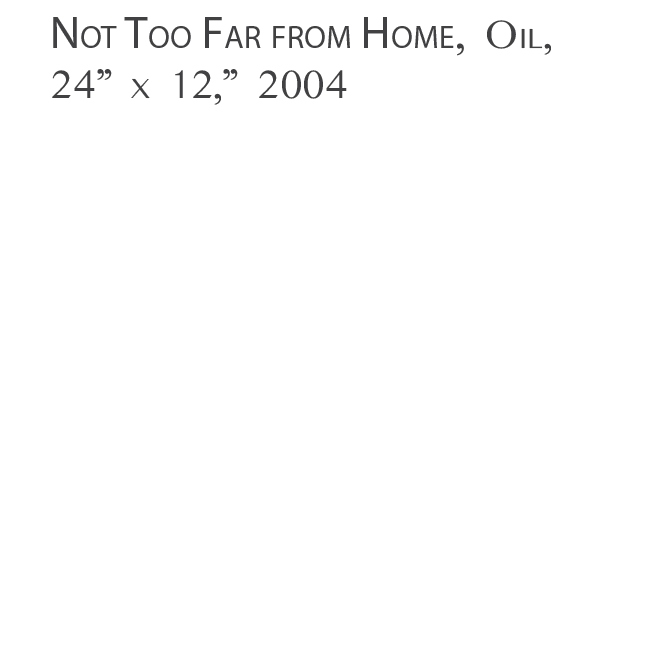

OOTSTALK
A PRAIRIE JOURNAL OF CULTURE, SCIENCE, AND THE ARTS | SPRING 2016
VOLUME II, NUMBER 2, Spring 2016
A note on this issue’s multimedia features: In order to access all the media in this latest issue of Rootstalk—including content featuring embedded sound files, a slide presentation, and video clips—you’ll need to download the interactive PDF version (965 MB) and, once you’ve done so, open it using the Adobe Acrobat Reader. If you don’t already have the Adobe Acrobat Reader installed on your computer, you can download a free copy from www.adobe.com.
Cover image: Jill Dubbeldee Kuhn, “Hay Bales on A Picnic”
Acrylic, 18” x 24”, 2015
Cover design: Nathan Kim
Table of contents image: Justin Hayworth
Layout: Jonathan Andelson, Mark Baechtel
Photograph | Herrnstadt
Brushycreek IV, Pre-lake, photograph by Steven Herrnstadt
Editorial Staff
Rootstalk Volume II, Issue 2 (Spring 2016) has come together through the efforts of the students in Grinnell College’s third special-topics classes in online publishing, who worked diligently under the guidance of the course’s instructors and a group of the College’s alumni. These alums, who visited the classroom both electronically and in person, were carefully chosen for the relevant skills they brought to the project. They were fantastically generous with their time and advice as they guided the students (and their professors) in the labor and research that go into designing and sustaining a multimedia online journal from the ground up—one that matched our vision statement and mission statement.
Mission Statement: To provide a forum for scholarship, commentary, and creative expression in any discipline that will stimulate dialogue about significant issues in the prairie region of North America.
Vision Statement: We aspire to create an electronic, web-based journal that publishes multidisciplinary, interdisciplinary, and transdisciplinary thought and opinion on any regional topic. We expect to serve not as an outlet for primary research, but rather as a venue where researchers discuss the societal implications of their research, and where writers and artists present their arguments, ideas, and aesthetic statements. We expect to publish recognized national and regional writers and artists as well as newcomers, including the most exemplary undergraduates.
Alumni Mentors
Liz Fathman, ‘85
Jule Meyer, ‘80
Jody Phillips, ‘74
Mark Schorr, ‘66
Dan Weeks, ‘80
Student Content Editors
Sarah Arena, ‘16
Benjamin Brosseau, ‘17
Jane Carlson, ‘17
Rita Clark, ‘18
Ivy Kuhn, ‘16
Deborah Msekela, ‘17
Kate Strain, ‘16
Emma Thomasch, ‘16
Kenneth Wee, ‘16
Online and Web-presence Editor
Ajuna Kyaruzi, ‘17
Faculty Editors
Jonathan Andelson
Mark Baechtel
Rootstalk, Spring 2016
Volume II, Number 2
Supported by Grinnell College’s Center for Prairie Studies
and a grant from the Donald L. Wilson Program in Enterprise and Leadership
Rootstalk is committed to promoting open expression and is hosted on
Grinnell College’s Digital Grinnell server.
Drawing | Howland
Drawing by Madeline Howland
Contents
In order of Appearance
Brushycreek IV, Pre-lake (photo) 2
Steven Herrnstadt
Untitled drawing 4
Madeline Howland
Story IX (photo) 18
Steven Herrnstadt
Jana the Biking Beekeeper 9-12
Sarah Arena
Poetry of Cultural and Spiritual 13-14
Identity
Stephanie Snow
Birds of the Prairie: Bobolink 15
What I Learned at the White Horse 16-25
Ranch
Dan Weeks
Winter Iowa, XVII (photo) 25
Steven Herrnstadt
Three Photographs 26-27
Elle Duncombe-Mills
Uphill Both Ways 28-33
Helen Johnson
Birds of the Prairie: Henslow’s Sparrow 34
Albert Kahn’s Architecture 35-40
Comes to Grinnell
Dan Kaiser
Underground Skies 41-42
(Computer Animation)
Ajuna Kyaruzi
Breaking the Silence on the Farm 43-44
Crisis
Emma Thomasch
Rabbit Drive 45-52
Todd Kincaid
Satori I (photo) 52
Steven Herrnstadt
“We Lived There Ourselves for 53-62
Forty-some Years:” Lives Spent
on the Iowa Prairie
Emma Thomasch
Barn Quilts in Poweshiek County, IA 63-65
Janet Carl
Making a Barn Quilt (graphic) 66
Doyi Lee
Minnesota Is A Temperamental Artist 67
Michelle Harris-Love
Birds of the Prairie: Dickcissel 68
Closeup: Steven Herrnstadt 69-72
Birds of the Prairie: Burrowing Owl 73
The Medicine Rock of 74-77
South Dakota
Corey Wannamaker
A Taste of Utopia: A Brief 78-84
Introduction to Fairfield, IA
Lane Atmore
Closeup: Jill Dubbeldee Kuhn 85-87
Living on Quicksand 88-94
Rosa Jimenez
The National Water Dance 95-96
Comes to the Prairie
Untitled photo 97
Justin Hayworth
Endnotes 101
By Category
Words
Jana the Biking Beekeeper 9-12
Sarah Arena
Poetry of Cultural and Spiritual 13-14
Identity
Stephanie Snow
What I Learned at the White Horse 16-25
Ranch
Dan Weeks
Uphill Both Ways 28-33
Helen Johnson
Albert Kahn’s Architecture 35-40
Comes to Grinnell
Dan Kaiser
Breaking the Silence on the Farm 43-44
Crisis
Emma Thomasch
Rabbit Drive 45-52
Todd Kincaid
“We Lived There Ourselves for 53-62
Forty-some Years:” Lives Spent
on the Iowa Prairie
Emma Thomasch
Barn Quilts in Poweshiek County, IA 63-65
Janet Carl
Minnesota Is A Temperamental Artist 67
Michelle Harris-Love
The Medicine Rock of 74-77
South Dakota
Corey Wannamaker
A Taste of Utopia: A Brief 78-84
Introduction to Fairfield, IA
Lane Atmore
Living on Quicksand 88-94
Sounds & Images
Steven Herrnstadt’s Photographs
Brushycreek IV, Pre-lake 2
Story IX 18
Winter Iowa, XVII 25
Satori I 52
Slough 70
Story XI 70
Spring Fayette 71
Satori XXIII 72
Untitled drawing 4
Madeline Howland
Three Photographs 26-27
Elle Duncombe-Mills
Birds of the Prairie
Bobolink 15
Henslow’s Sparrow 34
Dickcissel 68
Burrowing Owl 73
Underground Skies 41-42
Ajuna Kyaruzi
Making a Barn Quilt (graphic) 66
Doyi Lee
Jill Dubbeldee Kuhn 85-87
The National Water Dance 95-96
Comes to the Prairie
Untitled photo 97
Justin Hayworth
Editors’ Note
In our ongoing effort to inspire an appreciation for and experience with the prairie region, we invite you to enjoy our third issue of Rootstalk. We’ve assembled a wide-ranging collection of thought-provoking pieces, covering subjects from barn quilts (“Barn Quilts in Poweshiek County’) to bird-song (“Birds of the Prairie”), from the experiences of a youth new to the prairie (“What I Learned at the White Horse Ranch”) to the lifetime of experience garnered by those who’ve spent their lives in intimate contact with the land (“We Lived There Ourselves for Forty-some Years”). From undocumented immigration to water safety, the stories in this issue give you multiple themes and destinations to visit; we hope you’ll visit them all.
All of the pieces in this issue—poetry, essays, short stories, videos and digital art—share similar roots. In bringing them together, we’ve striven to create a synergy of science and art, and to promote meaningful dialogue. It’s worth mentioning that the team of diligent editors who put this content together is every bit as diverse as the authors. These students come from around the world. They have diverse academic backgrounds and areas of interest, and have come together around Rootstalk’s central idea: that nurturing a sense of place—in our case, a prairie place—is vital in our busy lives. It isn’t every day or everywhere that you get to see differences blend together so seamlessly—and richly.
Rootstalk Student Editors, Spring 2016
Back row from left: Kenneth Wee, Sarah Arena, Ben Brosseau, Ivy Kuhn, Emma Thomasch
Front row from left: Kate Strain, Ajuna Kyaruzi, Jane Carlson, Debbie Msekela, Rita Clark
Photograph | Herrnstadt
Story IX, photograph by Steven Herrnstadt
Jana Kinsman is a beekeeper and illustrator living in Chicago, IL. She has been beekeeping for five years, enjoys teaching and collaborating, and believes beekeeping is best when it’s shared with the community. When she isn’t keeping bees, she’s traveling by train or bike to nature-filled destinations, or sending emails and petting her roommate’s dog.
This piece was written based on an interview with Jana Kinsman, founder of Bike a Bee. More information about Bike a Bee can be found at its website: www.bikeabee.com, or Facebook page: www.facebook.com/bikeabee.
Photo courtesy of Adam Alexander
Jana the Biking
Beekeeper
Sarah Arena
Every morning, Jana Kinsman pulls her bike into Chicago traffic on her way to work. Unlike the other commuters, who are heading to downtown skyscrapers for their 9-5 desk jobs, Kinsman rides her bike to meet her thousands of workers. When she arrives at her South Side destination, she is greeted by a cacophony of buzzing employees. Kinsman’s office? A community garden. Her desk? A beehive. Kinsman is an urban beekeeper and founder of Bike a Bee, an urban beekeeping initiative that in recent years has worked in community gardens to make honey and teach local communities about bees.
Kinsman grew up in the Chicago suburbs and worked for a few years as a graphic designer and illustrator. However, she had been fascinated by insects as a child, and after college found herself interested in agriculture and self-sufficient farming. It wasn’t until the winter of 2011 that her interest in beekeeping solidified. While taking a beekeeping class with the Chicago Honey Co-op, she found herself “riveted” by the lectures, on which she was “writing pages and pages of notes” about how to keep bees.
Although she knew bees fascinated her and that she wanted to try her hand at keeping them, she didn’t know where or how she would go about doing it. As a result, that summer Kinsman went to Eugene, Oregon for five weeks to work as an apprentice to a local beekeeper. During this time, she learned how he cared for his bees, which he kept in his backyard, as well as in community areas around Eugene, such as an elementary school, a blueberry farm, and in community gardens. Although most beekeepers contain their hives to a single area out of convenience, her mentor would drive around the community to check on the hives. This allowed him to keep more hives and to share bees with his larger community.
Bike a Bee began as a joke; inspired by visiting her mentor’s hives, Kinsman joked that she would add another challenge to her beekeeping by biking to her hives. With the hands on experience of her summer in Oregon, Kinsman felt confident that she could start keeping her own bees. Back in Chicago, Kinsman began “bugging” the Chicago Honey Co-op to figure out how much her idea would cost. This led to a Kickstarter campaign in 2012 and by that spring Bike a Bee had begun.
Bike a Bee’s hives are hosted in community gardens around Chicago, and Kinsman travels by bike to inspect and tend to them. For Kinsman, there is no typical day at work. During the winter, when the hives are dormant, she takes advantage of this time to travel, to save up money for the summer, and to prepare for the next year. During the spring and summer months, Kinsman inspects her hives every seven to ten days. Although many of her tasks are physical, from biking to the various gardens, to smoking the hives, beekeeping is also a thought intensive pursuit. Kinsman enjoys the amount of critical thinking involved in beekeeping, and much of her daily task involves observing the environment to see the size and development of the colony, the weather, and how the bees’ food sources, local trees and flowers, are growing.
In making the transition from Oregon to Chicago, the biggest change was the weather. As a result, Kinsman and her friends at the Chicago Honey Co-op “encourage local genetics by raising colonies whose Queens are used to the climate through selective breeding of the Queens and of the drones.” This helps create colonies that will thrive in northern climates. Furthermore, because Kinsman’s hives are located across many community gardens, the local environment greatly impacts the bees and the honey. While keeping bees in many locations isn’t necessarily the most efficient practice, it “makes for a more interesting project,” as well as for more interesting flavors in the honey. As honey’s profile changes based on the bees’ diets, each garden’s honey will be greatly impacted by what is blooming in the vicinity at that time of year, especially considering that bees will travel up to five miles around a hive. Two summers ago, for example, an abundance of white sweet clover led to the hives producing honey with a different profile from the year previous. Yet, each of the gardens also produced honey with a unique flavor based on the local environment and the particular flowers the bees chose to forage on. While Chicago is an urban environment, it is surprisingly green, especially in the South and West Sides where Kinsman keeps her hives. As a result, the bees have a variety of flower sources from which they can feed.
Despite its urban location, Kinsman largely experiences problems that are universal to beekeepers. Occasionally a beehive will die in the middle of the summer, which means that the community garden will have to wait until the following year to receive a new hive. Last summer, a less common misfortune occurred when two hives were stolen in the middle of the night. While unfortunate, Kinsman says beehive theft is even more prevalent in rural areas, where fellow beekeepers occasionally steal and sell lucrative hives. One problem Kinsman has not dealt with is Colony Collapse Disorder, which is largely associated with practices used in monoculture farming where bees are transported around the country to feed off a single flower source. In contrast, Kinsman’s bees have been largely healthy as a result of the stationary hives and diverse flower sources available to them.
Currently, Kinsman’s biggest challenge is finding the money to keep doing what she loves. Bike a Bee sells its honey at the end of the summer, which means from April to July Kinsman has to make her winter earnings stretch. While “the project makes enough money to keep [itself] going,” it still is not lucrative enough to allow Kinsman to pursue the project as a full-time job. As of now, Kinsman describes Bike a Bee as her “full-time hobby,” although she “want[s] to be doing this all the time.”
Kinsman not only produces honey, but she also educates people about bees. For people interested in getting involved in beekeeping, Kinsman recommends taking classes and finding a mentor. Because of the unique nature of beekeeping, it is imperative to “work with someone who knows what they are doing,” as a mentor can answer many questions based on their experience and they can help newcomers feel comfortable with working with bees. The other piece of advice Kinsman provides to newcomers: “Don’t be afraid of the bees.” While many gardeners from Bike a Bee’s community gardens start out afraid of the insects, by the end of the summer they have grown accustomed, even fond, of them. Kinsman notes, “The more people are around bees the more they can see the interconnectedness of nature and food.” For Kinsman, this interconnectedness is her most cherished takeaway from her work with bees, as “with beekeeping I got to be a part of something that is part of the bigger picture.”
Jana the Biking Beekeeper | Arena
While keeping bees in many locations isn’t necessarily the most efficient practice, it “makes for a more interesting project,” as well as for more interesting flavors in the honey.
Photo courtesy of Adam Alexander
Photos courtesy of Adam Alexander
Jana the Biking Beekeeper | Arena

Photo courtesy of Adam Alexander
Stephanie Snow is a writer and musician who currently lives on the Meskwaki Settlement outside of Tama, Iowa, with her family. She is part of an ensemble that has been nominated for several categories in the Native American Music Awards. The extended biographical statement following the poems lends important context to her two poems.
Photo courtesy of Stephanie Snow
Poetry of Cultural and
Spiritual Identity
Stephanie snow
Next To Me
I made a space for you next to me
Cleared by a shaft of light
Reclining against our Tree Twins
Whose limbs touch
And grow to reach each other
Green leaves flash messages
The past streams into the current moment
Soft smooth belly
Forearms with light, fine hair
Fingers long and elegant like those of the ancestors
Do you see? My wounds have become exotic tattoos
Home
Gooseberries pierced palms
Deciduous trees walk westward
so slowly
feathery roots trailing
Fingering the ground
Grasping at dust
Shadow people operated
in muddy floods of chemicals
and cut my ovary in an act of genocide
Sips of roseroot tea
Medinebisona for my throat
Isolation for the vomiting
Nosika for the whole of me
A pressure on my shoulders and back of my neck
From the eyes of surrounding woods
alone.
Never alone?
Scraping thud
As mother pushed me to the ground
Ready to do away with me for the third time
or was it the seventh?
A white cloud reached down a billowy arm
to brush away gravel embedded in hands and knees
Nokomis was my playground
warm, sparkle-eyed jungle gym
Brown supermodel/role model with wrinkled skin
turned ancestor-goddess
who visited my deathbed
And will greet me on the other side
My documented federal name is Stephanie Snow. My traditional clan name is Aditea (pronounced Ahh-shee-deh) of the Swan Clan of the Meskwaki People who reside on the only Native American Settlement in this country. A “settlement” is different from a reservation in that the Meskwaki People bought the land they live on, and own it in common. My background is multi-tribal, multicultural, multiracial, and multilingual. I am an enrolled tribal member of the HoChunk Nation. I am a Meskwaki descendant and was raised with the language and customs of the Meskwaki People. I am also Lakota (commonly known as the Sioux). My great-grandfather was HoChunk, Omaha and Black (when the term “African American” didn’t exist, but the powerful interaction of cultural and spiritual identities grew between the two groups). My father’s grandmother was Dutch. French heritage exists on both sides of my family. I speak Meskwaki, Spanish, English and French—my first language being Meskwaki.
As an embodiment of diversity in human, walking, talking form, I have been aware of differences and similarities from an early age as I was practically ostracized from most communities for the way I look.
I grew up surrounded by the woods. Oak trees and cottonwoods were my playmates and companions near the Iowa River. We gathered and grew our own food. Our People’s ceremonies are synchronized with the cycles of the seasons and the position of the sun. Although not claimed by my parents, not fully accepted into any community, (Native or otherwise) I belong to Iowa, the perfect place where the woodlands transition to prairie. It is the land from which my body was made and will return to, and to which my heart is intimately connected.
After graduation from Grinnell College in 2003 with a degree in Anthropology, I worked in the areas of career development, academic advising, diversity, tribal cultural resources and language preservation, and resource coordination, and I have provided interpretation services as well. In one position I was able to assist individuals from over 100 countries.
I have been a member of a multicultural dance troupe out of Des Moines and a major Native American Dance troupe out of Minneapolis for several years. As a member of a local Native American song, storytelling and dance troupe, I have also had the opportunity to work with acclaimed Native American artists, performers and actors. The acoustic duo in which I am a vocalist has been nominated for several Native American Music Awards in both 2004 and 2015, the highest honor a Native American performer can receive.
I sing. I dance. I educate. Not only am I a role model not only for my two children; I have also been someone others have sought for advice, consultation, opinion, and perspective due to my personal identity as a formally educated Native woman with traditional cultural values.
Two poems | Snow
Photo courtesy of Reid Allen, taken at Dunbar Slough in Greene County, IA
Birds of the Prairie:
Bobolink
Dolichonyx oryzivorus
The Bobolink is often found in mowed, grazed, or recently burned grasslands as well as in marshes and agricultural fields during molting and on migration. Breeding males (pictured above) are mostly black, with a white rump and scapulars and a straw colored nape. Though still commonly found, the Bobolink’s numbers are decreasing due to loss of native prairie habitat and changing agricultural practices.
Description adapted from the Cornell Lab of Ornithology
Song: a bubbling, metallic warble with varied pitches
Recorded by Wilbur L. Hershberger, courtesy of The Macaulay Library at the Cornell Lab of Ornithology
Click the icon to hear a 45 second call recording.
White Horse Ranch | Weeks
Dan Weeks (danwweeks@gmail.com) earned an MA/W in creative nonfiction writing from the University of Iowa’s graduate writing program in 1984. He’s spent the past 32 years as a profile, feature, and essay writer and photographer and as a magazine and book editor, mostly for the Better Homes and Gardens family of publications. He edited The Grinnell Magazine (www.grinnell.edu/sites/default/files/documents/GrinMagSum15.webFINAL.pdf) from 2010-2013; currently he edits The Iowan magazine (www.iowan.com). When he retires, he’s a’gonna write a book about the White Horse Ranch.
Photo courtesy of Dan Weeks
What I Learned at the
White Horse Ranch
Dan Weeks
“Oh, kid! I’m a’gonna do something I’ve never done before in my life!”
We were sitting at the only stop sign for dozens of miles. It was at the south edge of Naper, Nebraska, population 166, where the only paved street in town met Highway 12, a lonely, weathered two-lane that wound through the Sandhills just below the South Dakota border. It was May 24th, 1980, the day after I graduated from Grinnell College in Grinnell, Iowa.
Beneath the stop sign was a tiny, raised asphalt “traffic island”—just a bump, really—in the middle of the street. Per state highway regulations, a Nebraska DOT placard under the stop sign read “Keep Right.”
Ruth pulled down the brim of her battered Golden Sun Feeds cap and glanced furtively around as though she was about to attempt a bank heist. She gripped the wheel. There wasn’t a moving vehicle in sight all the way to the horizon in four directions.
“What are you going to do, Ruth?” I asked.
“I’m going to pull around to the left here!” she said, shifting into low. “And if the law catches me, it’ll be just too damn bad!” Ruth gunned her little inverted-bathtub-shape 1959 Rambler station wagon. She swerved to the left of the stop sign and rocketed across highway 12 and off down the county road.
“Ha!” she said, triumphant, upshifting to second and goosing the gas. “I’ve always wanted to do that. Whhyy, they don’t need that sign there! For that little bump in the road! And why can’t you go to the left if you want to, when no one is coming!? I guess we didn’t do anybody any harm, did we?” She punched me playfully on the shoulder with a gnarled, arthritic hand. Then she slapped the Rambler into high and we careened down the gravel, trailing dust.
“Oh, kid,” she said, laughing conspiratorially at our stunt. “I tell you what!”
Ruth was old enough to be my grandmother. She had walked from Burr Oak, Kansas to Kadoka, South Dakota, behind an ox-drawn covered wagon when she was six years old, helping to herd her family’s three cattle and to pick up cow chips for the evening fire. Later, with her husband, Cal, she settled on 2,365 acres of short-grass prairie in the Sandhills overlooking the Niobrara River on what they called The White Horse Ranch.
The place had been built in 1902 as a trading post, and its cluster of buildings—lumber barn, dairy barn, general store, cream station, machine shed and ranch house—still straddled a broad path that had once been the Oregon Trail. There was also an abandoned café where Ruth lived in the summer, and a few battered cabins the Thompsons had built in the 1940s. She and I were headed back there after getting groceries.
It astounded me that I could leave a college campus where I’d majored in American Studies and the very next day find myself face-to-face with a genuine pioneer — one who had westered in a covered wagon and personally owned a chunk of the Oregon Trail and a trading post besides.
But I’d not come to the ranch to study pioneer settlement. I’d been introduced to Ruth and her ranch a few years earlier by my college roommate, Kevin Zoernig, who’d stumbled on the place while camping and had spent the past few summers there. I’d become fascinated by the ranch’s more recent history: How Ruth and Cal had created here an internationally famous touring circus act called Thompson’s White Horse Troupe that toured all over the country and into Canada during the 1940s and ‘50s, performing spectacular tricks of horsemanship.
The ranch and troupe had been famous: written up by every major publication from My Weekly Reader to LIFE. They were the subject of two Warner Brother’s movies, Ride a White Horse and Ranch in White. For a time, mail addressed simply to White Horse Ranch, USA was reliably delivered from as far away as Europe. The ranch—seven miles down gravel from the one-street town of Naper—was marked prominently on Nebraska state highway maps. In 1948, 10,000 people witnessed the annual June show there—more souls than lived in several of the surrounding counties at the time. The young women of the troupe were hailed as equestrian goddesses. They were all trained by Cal and Ruth. The motto of their riding school was “Learn to do by doing.” And the results were amazing.
“You have to understand,” said one Sandhills rancher, “Everything you saw at the White Horse Ranch back then was something new, something fantastic. What those girls and horses could do—it was unbelievable!”
By 1980, of course, all that was long past. You can still find a few folks at state fairs throughout the country that remember Thompson’s White Horse Troupe, but it will soon vanish from living memory. The troupe stopped touring in the late fifties, a casualty of radio, television, urbanization, and the end of the golden era of the great American road shows. For a few more years, the ranch hosted annual shows on Father’s Day when some of the former troupers came back to perform.
That ended when Cal died of an epileptic seizure the night before the 1963 show. Then Ruth had a nervous breakdown and was institutionalized. The troupe permanently disbanded, the horses were auctioned, the land rented to a cattleman. Ruth eventually went to live with relatives in Oregon. Several years before my arrival, she started coming back summers to clean up the place, which had become badly overgrown and run down. This year, she was to hold a roundup of the troupe once more—the first since the ill-fated 1963 show.
I was a pale, skinny college kid with barely acknowledged thoughts of becoming a writer. I had no portfolio and no prospects. But that spring, I’d read Zen and the Art of Motorcycle Maintenance. The book charged me with the persistent fantasy that the route to becoming a writer involved acquiring a motorcycle and heading west. I’d found a battered Honda 350 lying on its side in a slowly thawing mud puddle. I pressed $250 — the remains of what I’d earned as a housepainter the summer before — into the hands of the delighted bike’s owner, got it running, oiled the rusty drive chain, and the day after graduation rode it nearly 400 miles west-northwest to the ranch.
I’d strapped a pack containing a few clothes and a tiny war correspondent’s typewriter on the back. Armed with the typewriter and my pens and notebooks and my liberal arts education, I imagined I was equipped to make sense of the rise and fall of a place that was steeped in history, legend, glory, tragedy, and decay — and was now bound, if Ruth had her way, for resurrection.
In fact, I would make sense of none of these things that summer. I had expected life at the ranch to be concrete and straightforward — a tonic, rural Midwestern chaser to four years of intoxicating-but-abstract ivory tower study. Instead, my three months there were so mystical, baffling, and rife with metaphor I felt like I’d wandered onto the set of a slightly surreal play. I did eventually learn something, but it wasn’t at all what I expected.
But I’m getting ahead of myself. The day I arrived, I was both earnest and clueless.
I explained my plan, such as it was, to Ruth. I’d met her when visiting the ranch with Kevin but didn’t know her well. I half expected her to tell me to get lost. I suspect I would have been relieved if she had. Instead, she said, “Great! You can sleep in the loft of the long barn and do ranch work in the mornings, and write in the afternoon. Now, let’s go get some groceries.”
She introduced me in Naper as “Dan. He’s my writer. He’s a’gonna write a book about the White Horse Ranch.”
I was alarmed that Ruth said this out loud, to others. I dared make no such claim and wouldn’t have believed myself if I had.
But Ruth said it, again and again. First to Loren Siegh, the proprietor of Naper Super Service, where we filled the Rambler with gas. Loren was a giant of a man. He looked seven feet tall and was built like a linebacker. Ruth called him Super Man.
Then to Harley Nicholas, who chain smoked cigars and delivered the mail. Then to the couple who ran the grocery store. Then to Ben and Pete at Pete’s Cafe. Ben cooked, served, and washed dishes; his wife, Pete, sat at the back table nearest the kitchen and gossiped with customers and ate. Pete was so big she straddled two chairs and still spilled off both sides. Ben was tall and spare.
“Is that so?” said Pete when Ruth introduced me.
“Oh, yes!” said Ruth.
“He’s a writer, is he?” said Pete, cocking a dubious eye at me.
“Yep!” said Ruth. “He’s my writer, he’s my helper, he’s my boyfriend, he’s my everything.”
Conversation in the cafe stopped. Ruth tossed down the rest of her coffee, nodded to Ben to put it on her tab, and we left.
“Oh, that’ll get ‘em going!” Ruth said with delight as soon as we were back in the car. “Ha!”
“Ruth—” I began, hoping to make the point that perhaps it would be just fine if nobody knew who I was or why I was there. I wasn’t sure I knew these things myself. Just calling her Ruth was difficult enough. But she’d corrected me with impatience when I’d first called her ‘Mrs. Thompson.’
“Whhyyy!” said Ruth. “You’re a boy and you’re my friend. Isn’t that right?”
Moments later, we broke the laws of the state of Nebraska by failing to Keep Right.
I had barely arrived and already, from my perspective, things were spiraling out of control.
I’d also caught whispers and glances from some in Naper which implied that whatever had landed Ruth in a mental institution in 1963 had not completely left her. Others greeted her warmly and seemed to genuinely like and respect her.
I looked over at Ruth from where I’d braced myself in the passenger’s seat of her Rambler. I tried to decide if I was looking at a madwoman or a mentor. She was casually but expertly steering the speeding station wagon over the loose gravel with one hand. She streamed the other in the wind out the window. She chuckled about her illegal detour—or perhaps about the scene at Pete’s, it was hard to tell.
I considered what I’d sensed from the whispers and glances in town. But all I saw across the seat from me was a slight, lively woman in her seventies with flyaway white hair, a quick wit, and an even quicker smile. Already I liked her immensely.
I decided she looked sane enough to me.
“Ruth?” I said, over the rattle of gravel.
“What?” said Ruth.
“I’m ready to work,” I said. “Whatever you need done.”
“Well, great!” said Ruth.
Helping Ruth prepare the ranch for the impending reunion (Ruth called it “The Roundup) involved a number of jobs: hastily tacking roll asphalt on worst of the ranch buildings’ many leaking roofs. Filling a small ravine with sticks to make “a house for rabbits.” Cleaning the stalls and feeding the ranch’s two remaining horses, Abe and Mary. Making what Ruth called a “DIS-play” of ranch and show road memorabilia that filled the otherwise empty dairy barn. Building little tableaux of pioneer life here and there. (Under Ruth’s direction, we pulled the bleached skeleton of a covered wagon to a spot in front of the café, with a mock-up of a campfire complete with rusty enameled cookware to “represent the pioneers—for atmosphere!”) I was ready to do almost anything, and especially wanted to make Ruth happy. I could see that the White Horse Ranch had been home to a family of sorts, and that I had been invited in.
And, I took notes when Ruth told her stories. Those notes were a bit of a jumble, not like the outline-like transcripts of lectures I’d taken of college lectures. Ruth wasn’t a terrific interviewee—she didn’t sit still long enough, for one thing. And she wasn’t steerable—you couldn’t keep her on topic. She was always jumping fences and free-associating. One thing would remind her of something else and off she’d go and the only thing to do was hang on for the ride.
But she was a great storyteller with a fabulous memory for detail. I learned to always have a notebook within reach, especially during mealtimes and on trips to town. A single question was usually enough to prompt a series of stories. Living in a side-hill soddie as a kid and going to school in a sod schoolhouse where the chairs and desks were just rough-sawn planks. Teaching in a one-room school at age 17; starting the school day building a fire in the stove from cow chips the children would gather on their way.
Then there was life on the show road: sewing the trouper’s show costumes out of WW II surplus silk parachutes. The whole troupe performing bareback after all 30 saddles were stolen one night. Performing with Roy Rogers and Gene Autry, the flying Wallendas and other internationally touring circus acts in huge arenas in Kansas City, Chicago, Montreal.
Ruth was a colorful narrator. She was also humble and, I found out later, rigorously truthful.
“You know, I’m such a dummy. I’ve always said that. When I taught school, whhyy, every one of those kids was smarter than I was. Little kids! If I hadn’t had the teacher’s book, I couldn’t have told you the right answer to save my life.”
“When we went on the show road, we didn’t know anything about it. Any money we got went through five hands before we saw any of it, and what was left was just a little bit o’ nothin’. They had to butcher a cow at the ranch and send it to us by train on the road just so we could eat! And our manager rode in a big fancy car and took half the money and all he did was announce.”
“Cal said he wanted thirty horses and thirty virgins to perform. But you know, a couple of the girls got P-R-E-G—you know what I mean! I knew there was a lot of this love stuff going on, but heck, I couldn’t be everywhere at once!”
Each of her stories was a little piece of 20th-century Americana, with all the wide-eyed innocence of a Judy Garland/Mickey Rooney musical where a couple of country kids say “Let’s put on a show!” and succeed beyond their wildest expectations.
I quickly came to love life at the White Horse Ranch. To a bookish kid fresh out of college, it was pure oxygen. For sixteen years I’d been taught that there was a right way to do everything and that no matter what, it involved a great deal of schooling and the counsel of experts to succeed.
I’d grown up in Lexington, Massachusetts, a Boston suburb where everyone seemed to be a credentialed professional specialist in something or other. My next-door neighbor, Stanley Zisk, was a radio astronomer at MIT; Anthony Sperduto, who ran a particle accelerator there, lived across the street. My high school girlfriend’s father, Frank Moore Cross, was an internationally renowned Harvard biblical scholar. For a time, my sister’s best friend was the daughter of Harvard biologist and two-time Pulitzer Prize winner E. O. Wilson.
With such role models, I foresaw years of study in front of me before making anything of myself. The problem was, I could find no clear path to becoming a writer. At least not until Robert Persig’s example suggested to me that a motorcycle was probably essential.
Yet here Ruth and Cal had cheerfully dived in to the risky and creative world of show business, making it up as they went along. They arguably achieved world fame, even if they never made any money in the process.
Even more inspiring, I learned, was that nearly all of the girls who performed with them were just high school kids or recent graduates, most of them fresh off the farm. Some of the troupe had even been picked up hitchhiking on the road while driving between shows. Some of these were runaways from abuse, or orphans. They’d beg to stay with the show, and Ruth would make up a job for them, train them (remember: the ranch’s motto was “We learn to do by doing”), and come up with a little money to pay them. In the winter, she let those without another home stay at the ranch. Boyd County, where the ranch was located, wouldn’t accept these homeless kids in the local one-room schoolhouse, so Ruth taught them herself on the ranch. She and Cal even adopted at least one.
I found it incredibly liberating to journey to a world—neither that long ago nor that far away—where wits and talent and guts and lots of hard work and pure desire was enough to create something unique and wonderful. Listening to Ruth’s tales of these times was a reward in its own right, and it soon overcame my anxiety about what I was going to do with them. Perhaps Persig was right about writers needing to light out for parts unknown. In any case, I had no thoughts of going any further: I parked my Honda in the machine shed the day I arrived, and it gathered a thick coating of dust there all summer.
Ruth and I met across three generations and two very different worlds. She had given me a role I wanted but hadn’t had the courage to claim until then; I gave her the validation anyone gets from being listened to carefully—from being translated, however imperfectly and subjectively, from life and breath into something perhaps more permanent. It was while listening to Ruth tell her stories that I first learned that, when attended with sufficient intensity and sincerity, people are inspired to tell more than they know that they know. In the process, they often realize that their story is both particular and universal, and that their life has a value that transcends their own experience.
I would soon have that experience in spades. The Roundup was about to start, and Ruth had named me its official scribe.
I sat in the back corner of the former dining room of the ranch’s White Kitchen Cafe, now Ruth’s living room, pen and notebook in hand. The walls were hung with 8x10 glossy publicity photographs of the White Horse Troupe’s performances, with troupers Roman jumping, doing trick rides—the tail drag, the death drag: Horse galloping, rider trailing behind, head almost touching the ground, hoofs flying past, inches from their ears. Scrapbooks were piled on chairs. Ruth, deeply tanned, in a white shirt, billowing white hair tied back in a ponytail sat in a chair against the back wall, facing the door.
On this day, the troupers were to arrive. They’d driven and flown in from both coasts. Breeders of American White Horses—the ranch’s breed—had been invited as well. One breeder was to arrive from France. For weeks, we’ve been preparing—clearing campsites for those with motorhomes and horse trailers. Propping up 50-year-old outhouses. Building makeshift corrals with gate panels borrowed from neighboring ranchers.
The door opened. A woman walked in. She was in her late fifties—tall, striking. She had last been at the ranch in 1952. She squinted in the dim café dining room, then caught sight of Ruth. In an instant—as though she were one of those optical illusions that can either be seen as an old woman or a young girl—she looked sixteen. Smooth skinned, fresh, radiant.
“Ruth!” she cried.
“Brownie!” said Ruth, and they fell into one another, sobbing. I was supposed to be taking notes (an assignment I’d given myself—“get their names when they arrive so you know who they are”) but for reasons I didn’t understand, I started crying uncontrollably too.
More followed Brownie in through the door, and it was a non-stop cryathon. Ruth wiped her eyes and introduced each of them to me. Each of the women gave me a huge hug, as though I was a long-lost little brother whom they’d known here decades before and who for some reason had never grown up. I sniffled and bawled along with them.
I thought: This makes no sense: I am no one to these women and they are no one to me. But due to some sort of primal emotional short-circuit, that fact either didn’t seem true, or didn’t matter. My notebook pages grew tear-stained and I gave up trying to take their names.
In the days following, I learned them. Here are a few: Crackers, a compact but terrifyingly strong wrangler whose hug left me gasping for air. (Her nickname is short for firecracker, “because she’s as big a bang as when they lit the first one off,” someone explains.) Drey, a statuesque woman with long, wavy auburn hair, a big, warm smile and a languid voice that sounded like melting chocolate. Mousie, a tiny, bright-eyed woman. Windy, unbelievably tall and slender, like a poplar tree, with eyes that looked reflective and sincere. Dawn, a striking Nordic gal who somehow looked elegant in a simple straw hat, with a bandanna around her throat, a white shirt and jeans. She was kind-eyed and observant and generous-spirited. There were many more—doctor’s wives, hotel maids, ranchers, factory workers, homemakers, waitresses, teachers, speech therapists. They all still rode.
Ruth introduced me to these gals with her usual hyperbole and asked me to give them tours of the ranch. I could see, as they looked silently around the barnyard and witnessed what decades of neglect and decay had wrought, that they, too, had double vision.
I walked them toward the pasture by the lake to show them Abe and Mary, who were grazing there. The horses were, as Ruth said, “retired,” and typically paid little attention to visitors. But as we entered the pasture, they both trotted up to our group. Neither horse had been born when the troupe disbanded, although they were descendants of troupe horses and had toured for a time with an offshoot of the troupe based in Texas.
When Abe reached us, he knelt, then lay down on his side, something I’d never seen him do. The troupers were mesmerized. As though in a trance, Drey put one foot gently on his rib cage, raised her right arm with a flourish and swept her left arm wide, as though gathering in applause, and beamed at an imaginary audience. The troupers instinctively started clapping. Many wiped away tears. After a moment in-pose, Drey staggered backward, as though awakening from a dream, and Abe stood up again. “My God,” she said. “The finale.”
“That’s how we ended the show,” explained Bette, an ex-trouper who’d driven up from Florida. “Ruth used to tell us ‘Smile and Style! Sell the act!’”
No one could explain why Abe had done what he’d done. And he never did it again.
Then, of course, the troupers wanted to ride the ranch as they once had. Those who’d brought horses generously offered mounts to those without them. Ruth had a stiff hip that day and couldn’t come. I knew where the gates were in the barbed wire fences between pastures—their locations had changed since the 1950s—so I was nominated guide.
I’d never ridden a horse—I considered them big, dumb, and dangerous—but a trouper from Oregon proffered a mare named Flossie. With a bit of instruction from arguably some of most skilled horsewomen in the history of American Show Business, we were off. I was astonished to learn that the faster the horse went, the smoother its gait. And for some reason I rode with such ease that several troupers nearly refused to believe I wasn’t experienced.
“It’s the ranch,” mused Windy, almost to herself. “It’s a magical place.”
It certainly felt so that evening. The former troupers were suspended between past and present—reliving their youth, reflecting on life since. Enveloped in their swirling stories, even I felt a sense of deja vu. Before they’d arrived, I’d expected the women to mostly ignore or dismiss me as a latecomer—an intruder, even—but the opposite was true. I was approximately the age at which they’d first experienced the place, and they were intensely interested in my perceptions of it and of Ruth. They said she hadn’t changed a bit, and were entertained and reassured by the stories I told of the weeks I’d just spent with her.
It was nearly the summer solstice. Sunset and dusk lasted hours under the prairie’s big sky and broad horizon. We rode across the bluff overlooking the river, down to the intervale, along the riverbank, and up a spine of ridge that snaked between two draws back to the bluff. I felt an incredibly strong connection to these people, to the horse I was riding, to this place.
I didn’t get it. I shared nothing with these late-middle-aged women. Did I? Was I overlooking something? Or were these experiences of unity—and in the case of the ride, an inexplicable ease in doing something not only foreign, but feared—was this the result of connecting with something universal? These thoughts came later, when my analytical right brain took over, as it always did. Meanwhile, the trance continued.
That night, in the barnyard, several of the gals who had toured with the troupe in 1952 spontaneously began singing, as they had in the school bus that had carried them in the troupe’s convoy of trucks from fairground to fairground on the show road. They were really good, with resonant, harmonic voices. They sang in four parts. “Detour,” “Tumbling Tumbleweeds,” Patsy Cline’s “Crazy,” and many more. And of course, “Happy Trails/To you/Until we meet again” by which time everyone was bawling again.
I knew snatches of a few of the tunes and joined in. Bette must have seen me mouthing the words, because she dragged me out of the audience into the circle of singers. There was something intensely intimate about us, facing one another in a tight ring, singing our hearts out. I found that if I looked intently into Bette’s eyes, the lyrics of the songs—even those I didn’t know—would come to me just in time to be sung.
Later that night, I grabbed my flashlight and escorted Igor, one of the breeders, to his cabin. Igor was a picture of a Colorado cowboy: immensely tall, full beard, longish hair, ten-gallon hat, red bandanna, boots, spurs, chaps. He was also a University of Colorado microbiology professor and the son of the renowned theoretical physicist and author George Gamow, an early contributor to the Big Bang theory of cosmology.
“The ranch—It’s Brigadoon!” he said to me in amazement. “It comes to life once every hundred years. Nobody ages.” He stopped, looked around the moonlit barnyard. He shook his head. “Brigadoon,” he said again.
All too soon, the troupers and the breeders loaded up their horses and left. The ranch went back to looking like the bleached shell of the abandoned Oregon Trail trading post it was—windows gaping, doors missing, shingles flapping in the prairie wind. Ruth and I picked up the trash and closed up the cabins.
“Everybody has someplace to go,” she said to me late one afternoon, looking a bit forlornly at the tire tracks in the sandy barnyard that all led out the gate.
Except me, apparently. I’d spent the last few nights after everyone had left working on my notes. I had three wire-bound, college-ruled composition books full of them, and a sheaf of typed pages beside. I wasn’t sure they added up to anything and had no idea what to do with them.
Much had happened to me at the White Horse Ranch that I couldn’t quite explain. I’d written it all down—the emotional arrivals, Abe’s performance, my inexplicable horsemanship, the singing, feeling of being sucked into a universe where the usual rules didn’t quite apply. None of it made sense.
I felt, in ways I never had at college, that I’d failed the course, and that the class had moved on without me. That I hadn’t graduated after all, and — most terrifying — had no place else to go. Ruth had to leave for her winter quarters in Oregon soon. But I had no next destination.
Suddenly Ruth brightened. “Hey! We need milk. Let’s go to Reimans’,” she said. Jack and Jean Reiman were the nearest neighbors. They had a modest ranch about three miles over the Sandhills and across the Kya Paha River. Ruth bought our milk from them—unpasteurized, still warm from the cow—and she was the unofficial eccentric grandmother to the Reimans’ children. Jack and his kids watched over the ranch when Ruth was gone and took care of Abe and Mary. They were good people, and perhaps Ruth’s closest friends.
“Let’s take your motorcycle,” Ruth said. “You know I rode horses all my life but I never did ride a motorcycle.”
Suddenly I was anxious. I remembered the first time I took someone for a ride. I’d hit some gravel and we’d almost gone down. And at that moment I’d become acutely aware that a motorcycle as metaphor for freedom, travel, escape from convention, and means of self-discovery was also a machine that could easily get you killed. Shortly thereafter I purchased a new ASME-certified helmet that cost nearly as much as the bike. And I drove it like an old lady.
I didn’t like to overload the machine, especially on the deep sand, ruts, and loose gravel of the treacherous Sandhill roads. They made the bike skitter and writhe unpredictably, even at low speeds. It looked like it might rain, which would turn the roads to slick gumbo. And we weren’t dressed for riding: I was in a t-shirt, shorts, and sneakers; Ruth was wearing light cotton pants and her usual white blouse. If we took a tumble, we’d be picking gravel out of our skin for months, if we survived at all.
I was about to suggest we take Ruth’s Rambler, but Ruth was already headed purposefully toward the machine shed. She could move surprisingly quickly, even with her stiff hip.
I guess I learned something that summer, because I didn’t suggest we take Ruth’s Rambler. I tossed my helmet off the motorcycle’s seat into a corner of the shed—Ruth wouldn’t wear it, so I wouldn’t either — kicked the dusty bike to life, snapped down the rear foot pegs, and showed Ruth how to mount. We writhed and wobbled our way through the barnyard sand, up to the ridge, across the upper pasture, and out to the road.
Thunderheads towered on the distant horizon, filtering the afternoon sun into rays that flickered off the fluttering cottonwood leaves. At twenty-five miles an hour — as fast as I dared go — the air seemed perfectly still as a tailwind pushed us along. While I struggled to keep the bike upright, Ruth, oblivious, hollered commentary into my ear. “Now there’s where the old township school used to be. They wouldn’t teach my kids! Said they were indigents! Well, so what!”
At Reimans’, Jean poured us coffee. One of her kids fetched the milk from the tank in thick glass bottles with metal lids. Ruth pulled three dollar bills out of her pocket. Jack asked about the condition of Ruth’s grazing land after the roundup.
“Oh, they drove all over,” said Ruth, now cheerful— invigorated, apparently, by the ride or the company or both. “They made a terrible mess. But what the heck! It’ll come back.”
Suddenly it grew dark, and Jack looked out the kitchen window. “You’d better be getting home, Ruth,” he said. “Storm’s coming.” Jeanne put the milk jars into a paper sack.
Jack and Jean and I shepherded Ruth out the door. She wasn’t done visiting, but the thunderheads were now nearly overhead, and you could see lightning in the clouds. I started the bike, but Ruth wanted to say one more thing.
“Go! Go! GO!” Said Jack, pointing at the cloud and waving us on.
“Oh, Kid!” said Ruth, as though just noticing the line squall bearing down. “We’d better!”
I shimmied down the Reimans’ lane. The wind had built to a howl, and was heading right at us. I’d white-knuckled it all the way to Reimans’. The trip back was going to be much worse. I cautiously pulled out onto the road.
“GO!” Ruth hollered. I could almost feel her try to dig her heels into the motorcycle’s flanks.
Ruth’s command inspired a sudden, half-terrified, half delighted recklessness. I cracked the carburetors wide open and gunned the motorcycle through the gears.
“Hey!” Yelled Ruth appreciatively, one arm tightly around my waist, one clutching the sack of milk bottles. “This thing’s got speed!”
Funny thing—after we hit sixty or so, the bike stopped writhing and shaking. Everything seemed to smooth out, as though we were galloping, or riding on a cloud of dust a few inches above the ruts and gravel. Seventy was even smoother.
The cottonwoods were bent over, streaming windblown leaves and an occasional branch. Tumbleweeds bounded down the road. Above us, thunder crashed. Ruth whooped.
We headed down Windmeyer Hill toward the plank bridge over the Kya Paha. The hill was so steep and the bridge so narrow it looked like we were dive-bombing the deck of an aircraft carrier, albeit a rickety wooden one. Yee-ha!
“Jesus wept!” bellowed Ruth almost involuntarily as we hit the bridge with a bang, rattling the boards.
“I’m not swearing!” she quickly explained as we roared out of the valley toward the ridgeline that led to the ranch. “That’s the shortest verse in the Bible!”
As we crested the ridge, the biked soared like a horse clearing a jump. The world rolled out beneath us: the ridge, the oak savannas that fringed the draws, the
Everything you saw at the White Horse Ranch back then was something new, something fantastic.
White Horse Ranch | Weeks
Photo of White Horse Ranch, courtesy of Dan Weeks
I looked over at Ruth from where I’d braced myself...I tried to decide if I was looking at a madwoman or a mentor.
White Horse Ranch | Weeks
I found it incredibly liberating to journey to a world... where wits and talent and guts and lots of hard work and pure desire was enough to create something unique and wonderful.
White Horse Ranch | Weeks
White Horse Ranch | Weeks
“Hey!” Yelled Ruth, one arm tightly around my waist, one clutching the sack of milk bottles. “This thing’s got speed!”
braided channels of the shimmering Niobrara. The view seemed infinite in every direction.
With one more exuberant leap we flew across the pasture, landed in the barnyard, and rolled into the machine shed. Rain pelted the siding like it had been fired from a water cannon.
As we dismounted, the rain turned to hail. Whipped by near-tornadic winds, it stripped the foliage from the cottonwoods and coated the ground in iridescent white marbles. Had we still been on the bike, it would have been like riding into a volley of lead shot.
Ruth and I stared out at the hail ricocheting off the dairy barn, mesmerized by the storm. My hands and feet were buzzing, still vibrating to the 6,000 rpm beat of the motorcycle engine. The air smelled like ice and shredded leaves.
Suddenly, it was over. A brief burst of sunlight shone through the slit of sky between the thunderheads and the horizon. It turned the landscape prismatic, then disappeared behind the ridge, leaving the air a dusky amber.
“You made it!” said Ruth.
For a moment, I felt the way each of her troupers must have felt after their first successful performance on the show road. “I didn’t think I could,” I said, almost unconsciously.
“Why, of course you can!” said Ruth, looking right at me. You’re a good rider.” At least I think she said “rider.” Maybe she said “writer.” I couldn’t tell. It didn’t matter.
She paused. “You know, you’re a smart boy, but sometimes you think too much.”
And that’s what I learned at the White Horse Ranch.
“Winter Iowa XVII,” photograph by Steven Herrnstadt
Photography | Duncombe-Mills
Untitled photograph by Elle Duncombe-Mills
Photo courtesy of Elle Duncombe-Mills
Elle Duncombe-Mills
Elle Azul Duncombe-Mills is a photographer who focuses specifically on the intersection of art and activism. Having grown up in a variety of different places including Hawaii, Maine, and Costa Rica, she was exposed to many location-based tensions between people and the land, and developed an early interest in photographing the evidence and consequences of this relationship. She is a 2016 graduate from Grinnell College, and intends to continue photographing and exploring this theme in the American West in the coming years.
Untitled photograph by Elle Duncombe-Mills
Untitled photograph by Elle Duncombe-Mills
Up Hill Both Ways | Johnson
Helen Ikerd Johnson is a retired elementary school teacher. She taught in private, parochial, and public schools for thirty-five years. Mrs. Johnson is a novice at writing for publication, but she believes that every person has a valuable story to tell. In 2015, she coauthored, with Dr. Rebekkah Stuteville (Park University), a study on citizenship education in the United States. They presented that study to the 2015 International Association of Schools and Institutes of Administration conference in Paris, France. The study is pending publication in Public Administration Today. She currently has a story under consideration by Goldminds Publishing: a creative nonfiction work in which she shares her personal perspective of how US education has continued to evolve even in the face of unrelenting political assaults on the image of public schools. Mrs. Johnson holds a Master of Education degree in Behavioral and Emotional Disorders and an Education Specialist degree in Elementary Administration.
Photo courtesy of Helen Johnson
Up Hill Both Ways Tales We Tell About School
Helen Johnson
Prologue: My sister, three brothers, and I attended rural public schools in southwest Missouri from the early 1940s through 1963. Our parents believed that a good education would link us kids to the opportunities in the world beyond our river valley farm, so they supported the local public schools with their time, talents, and treasure. Memories of the Great Depression and a hard boyhood stayed with Daddy. He often said, “Get your education. They can’t take that away from you.” Daddy was grounded in the realities of life. Mother was an idealist. Her expansive reading and writings opened windows on the possibilities of life for us kids and for Daddy. Her keen mind and imagination stretched all of us beyond the limiting absolutes of our time and place. Our parents’ unconventional pairing gave us children the expectation that good things would come if we got an education, kept our minds open, and worked hard. Our formal education began at Eureka Elementary, a one room country school.
Reunion: I poured coffee into Styrofoam cups as friends and old classmates gathered around a folding table in the community center of the Methodist Church. The aromas of strong coffee and something sweet baking in the kitchen infused the air in the large room. It was a warm August morning and former students, teachers, and old friends of Eureka Elementary School had gathered to share good food, drink, and memories. It was Reunion Day.
The tradition of Eureka’s annual reunion began when a few former teachers and students decided they would meet once a year at the school site to honor the symbol of unity the old school had once been for the community. Each time they met, the Methodist church nearby invited the group in for coffee. The group grew larger each year, and across time the meeting became an event neighbors anticipated and looked forward to. After several years, the original group passed the planning of the get-together to younger teachers and students. My generation finally got the job. Three of my friends and I had sent invitations, booked entertainment, and arranged for food service.
Kathryn, Leota, Doris, and I (the new planning committee) positioned ourselves at the end of the long table. We were ready to settle in and see how the day unfolded. We watched while familiar, and not so familiar, faces gathered in groups around the room.
“What do you remember of the place?” Kathryn asked. My friend set her coffee cup down on the table and gazed somewhere beyond me.
“You’ll have to let me think on that,” I answered. “What’s your recollection of school days here?” I returned the question.
“Not much,” she whispered, “not much except, it was hard. School work was just hard for me.”
“What are your first memories of school?” evokes various responses from people. Some recount moments of fear and self-doubt, others remember times of fun and play.
When my older brothers speak of their days at Eureka Elementary School, they usually laugh and start by saying, “To get to and from school every day, I had to walk three miles in the snow, uphill both ways.” That is fair warning that a tall yarn is bound to follow. When we remember and tell stories about school days long past, the tales we tell are sometimes truths, sometimes rose-colored fantasies, and almost always child-like exaggerations.
Kathryn brushed back a strand of graying hair from her eyes and continued her story while former classmates gathered around the table. As Kathryn talked, I sipped my coffee and allowed my thoughts to return to the gray stucco schoolhouse that had once stood a few yards from where we were sitting.
My imagination constructed a ghost of the one-room school. I mounted the tall step to the concrete porch, inhaled the smell of the oiled wood floor, and touched the teacher’s desk that dominated the front of the room. I walked between the student desks, which were bolted to the floor in rows. I recalled a minimal world, but one sufficient for the business of school. The accommodations of the place were inconvenient, but inconvenience was a common circumstance in rural Missouri schools during the 1950s. We girls walked fifty yards from the school’s front door to our three-seater toilet, while the boys dashed an additional twenty yards to their facility.
The hand pump, across the playground and ball field, promised a fresh drink of water. Weather permitting, we walked to the pump with our teacher to fill our cups once a day. In inclement weather, we relied on the water from the crock water cooler in the lunchroom. The inconvenience of the situation never registered in our cares. I smiled to myself recalling those days of the speedy long trips to the outhouse, the pleasant meandering path we took to the water pump, our collapsible metal drinking cups, and the Red Wing water cooler.
Kathryn’s words brought my attention back to the group.
“I struggled every day. I dreaded going to school,” she continued. Her pain was difficult to hear, as it contrasted sharply with the songs and funny stories we traditionally shared at our reunions. “I had vision problems. I couldn’t see the board. The words were fuzzy and ran together. Mom and Dad got glasses for me, and that helped some, but the teachers never made any special accommodations for my situation. Back in those days, they probably didn’t have the tools or training to help me. School work took so much effort. It was just hard.” Kathryn chose her critical words carefully. Her mother had been a teacher during those same years at a neighboring country school, Klondike Elementary. Kathryn knew, first hand, the obstacles teachers faced while serving in rural schools. She had seen her mother work hard to meet students’ needs while making do with inadequate materials and few resources.
“Special attention was not part of the deal back then,” Doris said, as she turned to face Kathryn. “I remember Miss Duncan complimenting me for reading a flash card she had accidentally held upside down. I guess that was an accomplishment, but do you suppose that was the only commendable thing I ever did at school?” Doris’ expression turned sad and childlike. Her little-girl demeanor conflicted momentarily with her smart hairdo and fashion-forward style. “That is the first and last compliment I remember getting from a teacher,” she said, as she slowly shook her head recalling the moment.
The group at the table fell silent until Leota spoke up, commenting about reading with younger students while waiting for the teacher to interact with her class. I too remembered long periods of waiting for my teacher’s attention. The memories were unpleasant, because the waiting always ended with brief ineffectual lessons and disheartenment for me.
“Wanting to read was my first great school frustration,” I chimed in. “Mother was an avid reader, and I wanted to read like her. When I think of my first grade reading instruction, I still get nervous and a little angry.”
The group seemed interested, so I told them my recollections of how the school bell would ring, how we would sing and pledge our allegiance, and then how I would sit biding my time, waiting for reading class.
Eventually, Miss Neas would say, “Helen, bring your primer, please.” She was ready for me. She opened my primer. “Do you know any words on this page?” she asked.
“Oh, see. See Sally go.” I read.
“Very good, continue.”
“Oh, Sally. See Jane go ____. I don’t know that word.”
“Then say the words after me.” Miss Neas would read the rest of the story word-by-word. I repeated each word after her. She did not ask if I knew some of the other words. That was the end of the lesson. She was done with me. It was the “Look and Say,” reading instruction method. Students were to memorize the appearance of words, or learn to recognize words by looking at the first and last letter. That approach was probably not the best one for me. Word analysis and a few phonics rules would have served me better, but that approach to reading was out of style at the time. Miss Neas was fresh out of Southwest Missouri State College. She was following her professors’ “best practices” and had no experience with other instruction methods.
“The anxieties of not doing well and having no help to do things better; those are my first memories of school. Mother taught me to read before I completed first grade. I did learn to read, but I did not learn many reading skills at school,” I concluded.
My story was enough of the negative. Reunion Day was for remembering the good times. Our country school had been the heart of our rural community. Reunion was a time to celebrate and remember, with respect, the people who had taught and learned there.
We finished our coffee and joined a group gathering at the edge of the old schoolyard, near the Eureka Church Cemetery, where the original school bell hung stately and still.
Everett Bohanon, an octogenarian, rang the bell, calling our attention to the beginning of another country school reunion.
A Diller, a dollar, a ten o’clock scholar!
What makes you come so soon?
You used to come at ten o’clock,
But now you come at noon.
Everett completed his annual poem. Our small crowd moved from the bell back to the church community center and joined other old friends who had prepared food and arranged school memorabilia on tables around the room.
We pledged our allegiance to the flag and to one nation under God, stood quietly while the Gospel band played America the Beautiful, and then took our seats. Awards were bestowed for contrived accomplishments, such as living long and traveling great distances. We played trivia games, read poems, and told stories of days long gone.
Everett came to the microphone first to reminisce.
“This old hen used to come up from Maroney’s farm and would peck around in the school yard. So, one day I got me a kernel of corn, drilled a hole in it, and strung a string through it. I tossed that corn out onto the porch. Soon as that old hen saw it, she hopped up on the porch. Every time she got close to the corn, I’d give the string a yank. That hen came right on into the classroom. When the teacher saw that hen standing inside the door, I gave the string a big yank and stuffed it all in my pocket. I don’t think she ever knew what I’d done.”
Many in the crowd remembered, or related to, Everett’s story. They laughed and clapped their appreciation of the tale. A lot of pranks, mischievous behaviors, and some learning happened in those community schools. Everett spoke with warmth and good humor. He was recalling fond memories.
My brother, John, spoke next.
“I remember being so shy that I had to put my head under my desk to say my ABC’s; but, with the help of my teachers and support from some of the older girls, I was able to overcome my fears and eventually did very well in school,” he confessed to the crowd. He was being modest. John earned a doctorate degree in his twenties. He was a cute, smart, little whip with beautiful white-blonde hair. Supporting him was probably a pleasure for the older girls, waiting for their own instruction, and also a pleasant task for the young girl who was the teacher.
Cast back in time by others’ nostalgic stories, more schoolmates stepped forward and spoke of teachers and events that were amusing and evocative. One recalled a memorable teacher who used a paddle to inspire students. The elderly lady telling this story giggled like a school-girl and said that the teacher’s paddle had persuaded her that leisure might come later in life, but school work came first. Corporal punishment was a common disciplinary practice in most homes and was certainly seen as acceptable, and probably expected, as a disciplinary measure to be used by the rural school teacher-of-the-day.
Our rural school teachers were usually very young women and men with little teaching experience on their resumes. More seasoned teachers could get jobs in town schools where working conditions were more amenable and salaries were higher. Some of our teachers held teaching certificates from two-year Normal Schools, schools specifically for the training of teachers. Some teachers started their careers straight out of high school, after taking a college summer course of teacher training. Some were patient and compassionate. Some were not. All had little or no education and training in child development, curriculum and instruction, or classroom management.
Our teachers were tasked with unrealistic workloads of multi-age and multi-grade students, housekeeping chores, and some light maintenance of the school building. They did the best they could do with the conditions they met, and those conditions were part and parcel with our community’s social and economic standards.
By modern measures, the amenities of our one-room school were sparse and primitive, but they were similar to those in our family homes. Few houses in my community had indoor plumbing. Some, but not all, had electricity. The school site at Eureka was donated by a neighboring land owner. The school, like most homes in the community, was built by locals.
Parents repaired and maintained the structures and property. Their state and county taxes paid for the teachers’ salaries, text books, desks, and the stove. Room and board, for some young teachers, was provided by community families, in their homes.
Having such a direct and large investment in our education, most parents had high expectations that we would learn. Parents who were able to help their children with academics, did so. In many cases, parents were largely responsible for their children eventually learning to read, write, and do some arithmetic. While some of us country school students did learn, others of us did not do very well.
Our memories were often selective when we gathered for reunion, and some school history was just never mentioned on Reunion Day. We granted ourselves temporary permission to forget that most handicapped children did not attend public school, and that the students for whom one way of learning did not work well, simply dropped out. We also never spoke of the years in the 1950s and 60s when Eureka Elementary’s days were numbered, and small rural schools were fading into local history.
The consolidation of Missouri schools had caused conflicts and political divisions among our neighbors. Combining our small school with other area schools to create a larger, more efficient rural school, in the nearby town of Conway, Missouri, seemed logical to law makers. But that political proposal was viewed by many rural residents as a threat to the social and cultural fabric of their community. The adults who lived in isolated communities, like ours, clung desperately to their schools. They ferociously resisted Missouri’s rural school consolidation initiative. People had poured their time and treasure into their schools. They had no real proof that something different would be better. They wanted to retain control. The power and privilege of ownership was hard to relinquish. However, in the spring of 1958, Eureka’s projected enrollment was twelve students. Keeping the school open could no longer be justified. Eureka Elementary closed that spring, and we students were bused to Conway when school began in the fall.
The long war-of-words among neighbors and neighborhoods continued. The Conway, Missouri area’s resistance to rural school consolidation became the longest school consolidation battle in Missouri state history. The last school was annexed, and the Laclede County R1 School District was finalized in 1961.
Within a few years, Eureka’s empty one room school building had deteriorated and was demolished. Consolidation had removed the school from the heart of our community. There was a collective understanding that reunion should be an opportunity to recall and share the best of times. Everyone remembered the years of consolidation, but no one spoke of that time on Reunion Day.
One-room country schools had deficits, but they had assets that served their time and place. The habit of reunion reaffirmed each year that our school had been an important part of our past. The funny stories we told and the words we used created pictures in watercolor shades to soften the sharp edges of our school days; days that shaped our lives and built moral and intellectual character.
Reunion helped preserve the memory of the educational institution that provided minimal accommodations, but carried generations of Americans from a time when only the elite were educated to a time when all children could access the American Dream. The tales we told when we gathered for reunion were sometimes truths, sometimes rose-colored fantasies, and nearly always child-like exaggerations that gave veneration to a time past—a time well remembered.
Up Hill Both Ways | Johnson
Graphic by Serena Hocharoen
A lot of pranks, mischievous behaviors, and some learning happened in those community schools.
Up Hill Both Ways | Johnson
Serena Hocharoen, who created the graphic on page 33 as well as the sound file icon visible on each of the “Birds of the Prairie” pages, is a third year student at Grinnell College studying Chemistry and Studio Art. She has lived in the Midwest her entire life and in her free time she can be found making zines or cooking spaghetti.
Birds of the Prairie
Photo courtesy of Reid Allen, taken at Kellerton Grassland in Ringgold County, IA
Birds of the Prairie: Henslow’s Sparrow
Ammodramus henslowii
Henslow’s Sparrow is famously secretive. Reluctant to take flight, the bird runs through the grass to flee. Found in undisturbed grasslands, this sparrow’s population has dropped, largely due to prairie habitat loss, and it is now considered a near-threatened species.
Description adapted from the Cornell Lab of Ornithology

Song: insect-like two-syllable tsi-lick
Recorded by Julia Ferguson, courtesy of The Macaulay Library at the Cornell Lab of Ornithology
Click the icon to hear a 45 second call recording.
Dan Kaiser is retired from teaching Russian and European history at Grinnell College. After a career centered on places far away, he is using retirement to learn more about places close at hand. In 2013-14 he produced a blog (www.kaiser355.wordpress.com/2013/08/01/ricker-house) devoted to the neighborhood around Walter Burley Griffin’s Ricker House in Grinnell, and more recently has authored a series of “Grinnell Stories” (www.grinnellstories.blogspot.com).He is a fan of the Prairie School architects, but is interested in all architecture.
Photo courtesy of Dan Kaiser
Albert Kahn’s Architecture Comes to Grinnell
Dan Kaiser
For more than a century Grinnell, Iowa has enjoyed the architecture of Louis Sullivan (1856-1924), who contributed the Poweshiek County National Bank (1914) to the city’s landscape. Walter Burley Griffin (1876-1937), a colleague of Frank Lloyd Wright, has also enjoyed a warm reception in Grinnell where he first designed the E. W. Clark Memorial Fountain (1910; demolished 1954) and then the Benjamin J. and Mabel T. Ricker House (1912). Albert Kahn (1869-1942), contemporary to Sullivan and Griffin, has never figured in the conversation about Grinnell’s architecture. Indeed, to group Kahn with Sullivan and Griffin might be construed an insult to Progressive architecture since Kahn seemed to slight his colleagues by declaring often that architecture was “90 percent business, 10 percent art.” But, as important as Sullivan and the Prairie School architects were, no architect had more influence over the built environment of the prairie region than Albert Kahn.
Mainly an architect of industrial rather than domestic or commercial clients, Kahn developed and utilized a system of reinforced concrete that proved especially attractive to the emerging automobile industry. As automobile manufacture adopted the Taylorist principles of scientific task-and-time management pursued by Henry Ford (“Fordism”) and as the nascent assembly line began to prevail in automobile production, Kahn’s factory buildings—broad, open, horizontal spaces suitable for the assembly-line approach—sprang up all over the Midwest, and eventually even on the Russian steppe. Typified best by the giant River Rouge Ford plant (1917 with later additions) in Dearborn, Michigan, these immense buildings helped make the automobile affordable, thereby encouraging suburban sprawl and all its commercial and social consequences.
Until recently, there was no evidence that Kahn had ever added anything to Grinnell’s built environment, where Iowa architectural firms like Proudfoot, Rawson and Bird, Josselyn and Taylor, and Foster and Liebe long dominated. Kahn, by contrast, was known early in the twentieth century principally for his buildings in Michigan; “Detroit’s Architect,” as he was sometimes called (despite numerous buildings he created for the University of Michigan in Ann Arbor), could have had little reason to visit Grinnell, Iowa. However, last winter, as I scrolled through back issues of Construction News and American Contractor, I discovered the following notice:
Factory (add. to contain kiln & wood-working shop): Grinnell, Ia. Architect Albert Kahn, Trussed Concrete bldg., Detroit. Owner Spaulding Mfg Co., care F. E. Spaulding, mfr. carriages and automobiles, Grinnell. Day work. Excavating. Owner will buy all material. Brick, Kahn’s system reinforced concrete, tar & gravel roof, metal skylight, struct. & archt. iron, cement floors, electric wiring, lavatories, water closets, drinking fountains.
American Contractor 6 August 1910, p. 74.
I knew about the Spaulding factory. Largely through the work of a Grinnell College student, Ned Shank ’77, the Spaulding factory had gained a spot on the National Register of Historic Places in 1978. More recently, as plans coalesced for Hubbell Realty of Des Moines to renovate and re-purpose the remaining buildings, several newspaper articles retailed the history of the former carriage and automobile factory and the buildings in which the business had flourished early in the twentieth century. None of these articles mentioned Kahn.
It was only natural, therefore, to doubt the report in American Contractor: had the plan fallen through? Had Spaulding changed his mind? I decided to seek out the records so I could confirm whether or not Kahn had really designed a building for Spaulding. In 2003 Albert Kahn Associates, Inc. donated to the University of Michigan Bentley Historical Library a vast collection of papers and drawings for more than one hundred Albert Kahn designs, including buildings erected at about the same time as the proposed Spaulding factory. I consulted the online inventory, but found there no evidence of a Grinnell building. I contacted the collection’s curator, asking if perhaps papers relating to the Grinnell project had been overlooked or were so insubstantial as not to merit specific mention. Her reply seconded my finding: there was no Grinnell design in the Kahn papers at the Bentley Library; she suggested that I contact Donald Bauman, archivist at Albert Kahn Associates in Detroit, descendant of the firm Albert Kahn had founded in 1895.
In a prompt reply to my inquiry, Bauman confirmed that Albert Kahn had designed a building for the Spauldings in Grinnell, and that Kahn Associates still had the original drawings (but no construction photos) for job #00421 (August 1910).
Figure 1: Identification of Spaulding Building and Architect, Page 1. Courtesy Drake Community Library.
The drawings referenced what Ned Shank had described in the nomination for the Historical Register as Building #5, adjacent to Pearl Street and the railroad tracks, the westernmost building in the factory complex. Long abandoned and in 1978 its north wall in danger of collapse, building #5 was a three-story brick structure that had been erected just as the company embarked upon the production of automobiles.
Grinnell newspapers reported somewhat breathlessly on the likelihood that the successful buggy company might enter the modern world of automobile production. Already in June, 1909 the Grinnell Herald reported that, “If the firm embarks on the automobile business, extensive alteration of the plant will of course be necessary,” and went on to say that “An architect is expected to reach the city within a few days.” No more was said about the unnamed architect, but within a few months the Herald announced that a decision had been made to center automobile production not in a brand new building, but rather in “the brick structure immediately across the street east from the Spaulding offices.” The company decided to remodel the already-existing two-story facility on Fourth Avenue (no longer standing) to accommodate automobile production. As confirmed in an October, 1909 article in the newspaper, workers removed the roof and added a third story, then joined it to an extension of the west end, the entire structure to be “devoted entirely to the manufacture of the Spaulding automobile.”
Spaulding intended, as a January, 1910 Herald article reported, that “the first floor of the completed building will be used as an assembly room, where the machines will be put together; the second floor will be a storage room for completed automobiles and for parts, and the third will be the paint shop.” In other words, Spaulding simply transferred to automobiles the old model of buggy construction: a room in which all the vehicles were fully assembled in place at the same time. For such a plan, the old factory structure—interrupted by frequent wooden columns that subdivided the space
Figure 2: Inside the Spaulding Automobile Factory (ca. 1910). Courtesy Drake Community Library
into rectangles—was just fine. It was presumably the reason the Spauldings decided to make use of their the old building, rather than build an entirely new structure that employed new technologies and encouraged innovative production practices.
Shortly before the Spaulding renovation, Albert Kahn had devised an entirely different conception of an automobile factory that depended upon new construction materials. His first industrial commissions came from Henry B. Joy, Director and President of the Packard Motor Car Company, who invited Kahn to design the first of nine factories Kahn created for Packard
between 1903 and 1905. These commissions were an undoubted boon to Kahn and his company, but, as Sol King—later President of Alfred Kahn Associates, Inc.—observed in 1970, “these buildings were still of the conventional wood-mill construction…The working floor was obstructed by columns and 20 feet was the largest span not requiring partial steel construction.” But the tenth building Kahn designed for Packard (1905) marked the debut of a revolutionary concept of factory design. Using reinforced concrete instead of wood, Kahn eliminated most interfering columns without the expense and greater time implied by steel construction. At the same time, installing steel sash allowed Kahn to open much larger windows, which thereby threw much more natural light onto the factory floor. This was the factory model (originally dubbed “all under one roof” but later developed to be “all on one floor”) to which Henry Ford later applied his idea of automobile as-
Figure 3: Plan for Packard Motor Car Company Building 10 (1905); North Elevation. Courtesy Drake Community Library
sembly, along the way commissioning Kahn to design more than a thousand buildings for his company alone.
Packard Building 10 constituted an important step in a process that Kahn continued to develop, gradually opening up the entire factory floor of immense buildings, the better to accommodate the assembly-line production that came to dominate the industry. Buildings like Packard 10 and Ford’s Highland Park Factory (1909)—which stretched the horizontal outline well beyond the old norms—clearly pointed the industry in a new direction.
Figure 4: Ford Motor Company Highland Park Factory (1909).
Spaulding’s 1910 decision to build a new factory, therefore, positioned the company perfectly to take advantage of the revolution then just beginning to unfold. And for a time it appeared that the Grinnell manufacturer had seized that advantage. Despite having opted in 1909 to enlarge its old factory to suit automobile production, in 1910 Spaulding seemed to effect an about-face, hiring Albert Kahn to design yet another factory that would employ all the advantages of reinforced concrete and steel sash windows. How the Spauldings came to know about and choose Kahn remains a mystery. Although Kahn was closely connected to the University of Michigan where over the years several Spauldings played prominent roles, I could find no evidence of close kin or business connections between the Ann Arbor and Grinnell Spauldings. Similarly, the 1911 Dau’s Blue Book for Detroit and Suburban Towns listed two Spauldings as members of the Detroit Golf Club (for which Kahn designed a new clubhouse in 1918); no doubt these Spauldings were well-acquainted with Detroit’s business elite, the home of many Kahn clients. Nevertheless, I found no obvious connections to Grinnell.
Whatever the means, by 1910 Fred Spaulding, his brother Ernest, and their father Henry had arranged for Albert Kahn to build them a factory whose appearance did not differ substantially from the buildings Kahn had done for Packard and Ford at the time. The Grinnell Herald excitedly announced in August, 1910 that excavation for the new building had begun at the Spaulding factory. Misinformed about the materials, the Herald anticipated a structure made of “paving blocks,” but the paper correctly reported the dimensions of the three-storied structure: 206 x 74 feet. Nothing was said about the architect, the newspaper being more attracted to the excavator who had begun work on-site.
Figure 5: West Elevation, Plan for Spaulding Factory Building #5 (1910). Courtesy Drake Community Library
Examination of the plans for Grinnell makes clear,
however, that the new Spaulding building was modeled on Packard 10 and its immediate descendants.
A long brick, three-story structure that depended upon reinforced concrete, Spaulding #5 took its place among the most up-to-date factories in America. The building’s location adjacent to the railroad tracks facilitated delivery of coal for the power plant positioned on the south end of the structure; its position also proved convenient for delivery of lumber to be processed in the mill. In addition, ribbons of huge windows surrounded the structure on all three floors. Kahn’s plans imagined
a factory designed to allow implementation of the very latest developments in automobile production.
Figure 6: Spaulding Factory Building #5 from SW (Courtesy Drake Community Library)
The Spauldings, however, chose not to follow through on this opportunity. Rather than move production toward the emerging trend, the Spauldings instead imposed on this new design the old production model. As a 1912 article in Iowa Factories pointed out, the Vehicle Plant, as the Spauldings called their new building, functioned rather like the old subdivided factories the Spauldings had inherited for their buggy business: in addition to the new power plant at the south end, building #5 housed a shipping room as well as a woodworking shop and a smith shop, these last two producing parts for both the buggy and automobile divisions whose assembly took place in other buildings. As became clear within a few years, this system seriously constrained output and made it difficult to lower price at exactly the moment when Ford was flooding the market with mass-produced, less expensive automobiles.
Why didn’t the Spauldings capitalize upon Kahn’s new design? We are unlikely ever to find an explanation from the owners’ own hands, but some clues survive. As built, the new structure deviated from Kahn’s most recent innovations, inserted perhaps at the last minute, as indicated by the fact that the initial plans were revised August 30 (see Figure 1). Some changes were minor. For example, Kahn’s drawings provided for brick spandrels adjacent to the windows, but these ornaments were scratched from the building. Similarly, the metal parapet that Kahn proposed to cap the walls was replaced with less expensive brick. Both changes, insignificant for utility, point to meddling with the design for what were no doubt marginal savings.
A more important alteration with significant impact upon construction cost was the use of wooden
posts instead of reinforced concrete columns. Although Kahn attached iron hangers from joists to help
Figure 7: Detail of wooden column from Spaulding #5. Courtesy Ned Shank (1977)
improve the columns’ strength and surrounded the base and cap of each post with metal, the wooden posts directly countered the whole point of building with reinforced concrete. The “Kahn System” employed by Trussed Concrete Steel, an announced partner in the Spaulding project, used “spiral hooping” for concrete columns, but this option disappeared from the final Spaulding plans. Similarly, instead of cement floors, also part of the original announcement, the Spaulding building featured wooden floors. These alterations may explain why Kahn Associates preserved no construction photographs from the project and why the firm’s 1925 catalog of completed buildings (Industrial and Commercial Buildings) includes no photograph of the Spaulding factory, even though it appears in the index of Kahn designs. The Spaulding factory, rather than furthering Kahn’s developing design ideas, consciously pulled away from that notion, clinging to older, proven practices, and the building, therefore, did little to help Kahn interest potential clients.
It is ironic that only now, more than a century after the Spauldings reached out to Albert Kahn for a new building, is Grinnell aware of the part played in the town’s built environment by one of the world’s most influential architects. Back in 1910 when plans for an addition to the factory were first announced, no one—apparently not even the Spauldings themselves—bothered to identify the architect whom they had hired. Subsequently, as the fortunes of the Spaulding automobile plummeted, ending in the firm’s 1916 withdrawal from the automobile business, there was no reason to invoke the architect’s name, so his building lingered in ignominy, the identity of its architect forgotten.
Albert Kahn, on the other hand, grew immensely famous (and rich). If in 1910 he still had much to prove, he soon overcame that challenge as his firm designed increasing numbers of factories all across the country. Twentieth-century industrial behemoths like Ford, Chrysler, and General Motors (all Kahn clients) helped pioneer manufacturing processes that invaded other industries, bringing Kahn Associates in their wake. Soon, in addition to automobile factories, Kahn was designing newspaper production facilities, factories for cash registers, cement, and cigars. Foundries, machine shops and textile factories also had their genesis in Kahn’s design rooms. Especially momentous was the 1928 invitation of the Soviet government for Kahn to design in Russia some 500 factories whose estimated total cost at the time was five billion dollars.
Little of this factory architecture delighted the eye in the same way as Louis Sullivan’s ornamentation or Walter Burley Griffin’s embrace of nature. If at its peak Kahn’s architecture—depending upon concrete, glass and steel—anticipated modernism and an entirely new architectural vocabulary, many of the firm’s domestic and commercial buildings simply repeated the tired formulas of the nineteenth century, mimicking Georgian, classical, and other design standards. In industry, however, Albert Kahn made his mark, generating monstrous glass and steel structures large enough and efficient enough to serve the burgeoning automobile industry. Despite the Spauldings’ decision to ignore the production processes made available by their architect’s use of reinforced concrete, Spaulding Building #5 gave Grinnell a glimpse of a new world where not only the automobile but assembly-line mass production dominated the economy and helped reconfigure social space in the American heartland.
Albert Kahn’s Architecture | Kaiser
The Spauldings decided to make use of their old building, rather than build an entirely new structure that employed new technologies and encouraged innovative production practices.

Albert Kahn’s Architecture | Kaiser
Albert Kahn’s Architecture | Kaiser
Ajuna Kyaruzi is a third-year Computer Science major at Grinnell College from Dar es Salaam, Tanzania. She has been working as the web designer of Rootstalk since Spring 2015. Ajuna joined the journal to tie her interests in Computer Science with publishing, which is a new field for her. Having grown up in Tanzania, she has found living in the prairie for three years quite different and inspiring. While not working on Rootstalk, Ajuna directs Grinnell Appdev, tutors students in Computer Science, and is an active member of the African Caribbean Student Union.
Photo courtesy of Takahiro Omura
Underground Skies is digital artwork inspired by the small Iowa town of Grinnell’s beautiful sunsets and the restored prairie in the Conard Environmental Research Area (CERA). The piece uses computer-generated fractals to highlight the intricate links between and beneath the prairie region’s natural and urban landscapes. Kyaruzi draws on Professor Sam Rebelsky’s work in Media Scheme and GIMP—open-source software that helps his Introduction to Computer Science students create images with code—to foreground the richness of the natural and social codes that lie just beneath the prairie world we inhabit.
Click on the image below to visit a YouTube video of the image being generated. The code used to create this image is to the right of this page.
Underground Skies
Ajuna kyaruzi
Screen shot courtesy of Ajuna Kyaruzi
Underground Skies | Kyaruzi
#lang racket
(require gigls/unsafe)
;;; File:
;;; RTK-UndergroundSkies.rkt
;;; Authors:
;;; Ajuna S. Kyaruzi
;;; Samuel A. Rebelsky
;;; Summary:
;;; Code for digital art submission to the Spring 2016
;;; issue of Rootstalk
;;; https://github.com/kyaruzia17/RTK-UndergroundSkies
; +----------------+----------------------------------
; | Main Procedure |
; +----------------+
;;; Procedure:
;;; turtle-prairie
;;; Parameters:
;;; side, a natural number
;;; Purpose:
;;; Creates randomized digital art piece “Underground
;;; Skies”
;;; Produces:
;;; img, an image
;;; Pre-conditions:
;;; [No additional]
;;; Post-conditions:
;;; img is a square image of side length side
(define turtle-prairie
(lambda (side)
(turtle-wander (image-show (prairie-background side)))))
; Create the colorful square background of sidelength side
(define prairie-background
(lambda (side)
(image-compute (lambda (col row)
(cond
[(< row (/ side 6)) RGB-WHITE]
[(< (/ side 6) row (/ side 2))
(irgb (* col 0.30)
(* row 0.27)
(* col row 0.0052))]
[(= row (/ side 2)) RGB-WHITE]
[else (irgb (* col 0.016)
(* col row 0.00045)
(* row 0.091))]))
side side)))
; Modifies the image with `cityscape` and `ground` procedures
(define turtle-wander
(lambda (img)
(let* ([colt (turtle-new img)]
[side (image-width img)]
[half (* 0.5 side)])
(turtle-teleport! colt (* 0.1 side) half)
(turtle-set-color! colt RGB-WHITE)
(turtle-set-brush! colt “2. Block 01” 5)
(turtle-face! colt 90)
(cityscape colt side 0)
(turtle-set-brush! colt “2. Block 01” 1)
(ground colt side 0)
(context-set-fgcolor! RGB-WHITE)
(image-draw-line! img 0 half side half))))
; +--------------------------+-------------------------------
; | Turtle Helper Procedures |
; +--------------------------+
; Directs the turtles to create the skycrapers above ground
(define cityscape
(lambda (turtle side w)
(let* ([half ( - (/ side 2) 1)]
[max (/ side 6)]
[increment (random 5)]
[length (random (inexact->exact (/ side 4)))])
(when (< w side)
(turtle-teleport! turtle w max)
(turtle-face! turtle 90)
(turtle-forward! turtle length)
(turtle-teleport! turtle (+ w 4) (/ length 2))
(turtle-face! turtle 180)
(turtle-forward! turtle 4)
(cityscape turtle side (+ w 5 increment))))))
; Directs the turtles to create the intricate roots on the
; lower half of the image
(define ground
(lambda (turtle side w)
(turtle-set-color! turtle
(list-ref root-list
(random (length root-list))))
(when (< w side)
(turtle-roots turtle (+ 5 (random 15)) w (/ side 2))
(ground turtle side (+ w 50)))))
; Directs the turtles to draw repetitive and layered “roots”
(define turtle-roots
(lambda (turtle num x y)
(let* ([xlist (lambda (n)
(map (lambda (x) (* x n 0.1))
(iota 30)))]
[curr (if (odd? num)
(* -1 num)
num)])
(when (> (abs num) 1)
(turtle-teleport! turtle x y)
(turtle-face! turtle 90)
(for-each (lambda (len ang)
(turtle-forward! turtle len)
(turtle-turn! turtle ang))
(reverse (xlist (abs curr)))
(xlist (* 3 curr)))
(turtle-roots turtle (- num 1) x y)))))
; +-------------------+----------------------------------
; | Color Definitions |
; +-------------------+
(define RGB-WHITE (irgb 255 255 255))
; List of brown and green colors to create the roots
(define root-list
(append (map color-name->irgb
(context-list-colors “brown”))
(map color-name->irgb
(context-list-colors “green”))))
Janet Schlapkohl received her M.F.A. in Playwriting from the University of Iowa. She also has an M.S. in Education from the University of Iowa and a B.S. in Biology with minors in English, Chemistry and Education from Iowa State University. She is the founder of Combined Efforts Theatre, director of Country Camp, LLC (www.thecountrycamp.com) and the recipient of the Isabelle Turner Human Rights Award, the Richard Maibaum Award and the Finkbine Award for Human Rights. She was selected as a 2014 Visionary Playwright by Theater Masters. She lives on a farm in Iowa.
Photo courtesy of: Janet Schlapkohl
Breaking the Silence on the Farm Crisis: What We Can Learn From It
Emma Thomasch
After discovering letters in the Iowa Women’s Archives that made her realize she was not alone in her experiences, Janet Schlapkohl decided to tell her story. She wrote “Coming of Age in Chore Boots,” a one-woman play that traces her relationship with the family farm from her time as a child to a grown adult in the midst of, and after, the 1980’s farm crisis. Though the show tells her personal story, and that of her family, she was also telling the story of thousands of others as well. For many of her audience members, the confessional and vulnerable nature of her story resonates deeply with them because it breaks the silence that had existed for many years surrounding the subject of the 1980’s farm crisis. One of Janet’s goals is to educate people on this time period and bring some understanding to it, and she accomplishes this through an introductory video (see clip) shown before performances to give audiences a concise overview of the events. Many disappearing towns and many farmer suicides marked the 1980’s farm crisis, and “Chore Boots” personalizes this part of history with anecdotes about her neighbors and monologues about her experiences. In particular, Janet explores the secretive nature of the crisis, where nobody confided in each other. During one section about a relationship with a neighbor, Janet says, “She didn’t tell me then that the Ag Loan officer had been to their house so often that their dog no longer barked at him.” The breaking of the silence on the subject of this economic collapse is so profound that Schlapkohl has had numerous audience members come up to her after performances to thank her for telling their story and making them see that it was not their fault, and that they were not alone.
When asked about what inspired her to create this show, Janet said, “I wondered how many other women there were like me. Thought of my neighbors and family. Thought of all the people standing around at that sale. None of us had ever talked about it, so I thought well, I want to talk about it, it’s okay to talk about. I think it’s a great mea culpa moment for me to stand there and say what the auctioneer said…There’s a little bit of relief at that part—to be able to stand on stage and yell it, it’s therapeutic.”
Janet also expressed to Rootstalk her belief that it was important to her that she speaks up about her story because the crisis had such a widespread effect, saying: “It’s very important for non-Midwesterners [to learn about the farm crisis of the ‘80s]. It affected the national economy at the time. It’s important for them to see something that was a huge calamity in a huge portion of the country, this whole great central plains region - not just the Midwest was affected - it helps for people to realize how we’re connected.”
There is plenty to learn from the 1980’s farm crisis and its effects, Janet asserts. She suggests that there were ways the collapse of the industry could have been averted—through banks not pressuring farmers and through changing the national policies that caused problems in the first place—but also points out that the effects could have been minimized (in terms of suicides and deaths) if those struggling had only been more open about what they were going through. When asked what is the biggest lesson she would like people to take from “Chore Boots,” however, Janet says, “Pay attention to how national policies can impact the economy of thousands and thousands of people… The economic policies that caused the crisis to occur are still very much in place.”
An upcoming performance of “Coming of Age in Chore Boots” can be seen in West Union, Iowa at the West Union Performing Arts Center on May 14, 2016 at 7pm. Admission is $10 per ticket with proceeds donated to West Union’s New Community Theatre and Fayette County Historical Society.
More information about Janet Schlapkohl and her works can be found at her website (www.janetschlapkohl.com).
Breaking the Silence | Thomasch
Schlapkohl doing chores on her farm. To watch a video presentation on the effects of the farm crisis on farming families in Iowa, click the image above.
Author photo
Author photo
Todd Kincaid is a writer who lives in Jacksonville, Florida with his family. He has published stories and poems in The Eclectic, Fiction Fix, and in the online journal deadpaper.org.
Photo courtesy of Todd Kincaid
Rabbit Drive
Todd Kincaid
Scofield gnawed a piece of jerky, grinding grit from the plains as he chewed.
“Hell fire,” he said. “It’s even in the meat.”
Harper took off his hat and banged it on his boot and a rain of black dust fell from the brim. “That’s nothing,” he said. “I can’t even milk my only cow. Teats are bleeding from the dust. Rest of ‘em starved or smothered in the storms. Some say we will too.”
Scofield chewed the jerky for a long time and then struggled to swallow it. “Well,” he said, “them cowboys tried to tell us.”
Harper scoffed and spat on the floor. “Ah, to hell with them,” he said. He held a hard frown on his face until his jaw trembled.
Scofield looked out the window, which was pitted and scratched by the dust. “They sure knew what the land would do,” he said. “Now there’s nothing for either of us.”
“We had wet years before,” Harper said. “We’ll have ‘em again.”
Scofield looked down at the back of his hand. It was raw from the blowing sand. He shrugged but Harper was not looking at him. “Eight years,” he said. “Whoever heard of such a thing?”
“Not me,” Harper said. “You coming to the rabbit drive?”
“I reckon.”
“That field out by the dugout is overrun. You can hear ‘em scatting around out there. Nothing left in that dead field that don’t have bites out of it.”
Scofield shook his head. He looked at the window and thought about things. But then his head got heavy and he shook off the thoughts and took another bite of jerky. He touched the flask in his pocket while he chewed.
“Ever thought about going west?” Harper said. He dragged his fingers through the dust on the table in front of him.
Scofield shrugged. “Don’t believe them handbills, I reckon.”
Harper nodded. “I guess I don’t either. If it was that grand, folks would keep it to themselves.”
“Maybe. I don’t know. If they got fruit, somebody’s got to pick it.”
“Be work, I guess.”
“Beats piling up wheat to rot.”
Harper nodded. He let out a sigh and ran his hand over his face. Then he stood and stretched his spine and tugged at one of the buttons on his workshirt. “I’m gonna shuffle on back. Might have some of that stew waiting on me if I’m lucky.”
Scofield followed Harper to the door and watched him step down off the porch and walk across the hardpan. As he passed where the gate used to be, wind pushed a wall of dust across the yard and Harper turned his back to it and lowered his head. The grit fluttered his clothes for a moment, rising to a whine, and then died. Harper took off his hat and tapped the dust out of it and then walked into the distance, kicking up gray clouds as he went.
When Harper was out of sight, Scofield watched the horizon for a long time before he started for home. Then he walked down the main road toward his cabin, stopping now and then to bang grit from his shoes. He saw stunted trees against the fence that followed the main road. Piles of tumbleweed had tangled in some of the wire. At the top of the last hill he looked down the road against the horizon, thinking of the past. He fished a handkerchief from his pocket and took off his hat to mop the sweat. A teaspoon of grit spilled from the brim when he tilted the hat. He wiped his forehead, put on the hat and walked down the hill, his feet sinking in the sand.
Karen was working the water pump when he came up. She stopped working the handle when he got close and stood away from it with her hands on her hips, her dress moving a little in the wind.
“I don’t know why you bother,” he said.
She shrugged and gathered a loose portion of her dress to wipe her hands. Her hair was tied up but some of it had fallen. “It’s something to do, I guess.”
“Saw Harper down at the Wilson’s old place,” Scofield said. “He asked us to the drive too.”
Karen was still eyeing the water pump, breathing hard. She nodded. “Might just as well,” she said.
“Where’s Will?”
“Told him to move that wood to the other corner of the cabin. Damn centipedes are burrowing into the wall. Bet he ain’t doing it though.” She turned to look toward the cabin, shading her eyes with one hand. One of the knuckles was bleeding.
Scofield left Karen and walked around the corner of the cabin. Part of the wood had been moved and part was still there. He moved a few more pieces and then stopped to look across the field where there were a few tufts of dry grass. Somewhere in the grass he heard tapping, like a rock hitting the side of the cabin, and walked toward it. He found Will behind a tuft of grass sitting in the dirt. One leg was outstretched and he was hitting his boot with a fence rail over and over. When Scofield’s shadow fell over him, he looked up.
“Seen you whacking at your boot there,” Scofield said. “How come you’re doing that?”
The boy looked down at his boot. He tapped his boot again. “I guess to hear it,” he said. A wind came through the grass and they both lowered their heads against it.
“Ain’t but half of that wood moved,” he said. “Your mama was looking for you.”
“Centipedes come out,” Will said. “They was everywhere.”
“Well, that’s why you’re moving it.”
“I know,” the boy said. He whacked his boot again, just once.
“Knock ‘em against the cabin. They’ll fall off.”
“Some of ‘em hung on,” the boy said. “They was coming at my hands. How come they’re so mean?”
“I don’t reckon it’s meanness. You was taking their house, knocking ‘em silly. I guess we’d all come out.”
“They get in our house and eat the wood. They sting us sometimes. How come they do that?”
Scofield thought for a moment. He turned one pocket inside out and got a little dust in his hand. He feathered his fingers and gave it back to the ground. “It’s what they know how to do, I guess. They can’t eat the dust.”
The boy stared straight ahead and tapped his boot again. “I’m afraid of ‘em,” he said. “Seems like they come at night when they know I’m scared. Seems like they know I move the wood.”
“Night’s just when they do things. Like them coyotes we used to have. Some animals just like the night.”
“Them centipedes like the day too. They ain’t afraid of nothing.”
“Well, they don’t know to be, I guess. Not much room for a brain with all them legs.”
“How come they know where the wood is? How come they know we’re asleep?”
“Wood’s where they live. It’s where their food is.”
“How come they get in the beds?”
“They’re looking for more food, I reckon. Maybe they can’t sleep and they take a walk. It’s hard to figure a thing like that.”
The boy whacked his boot and said, “It sure is.”
Scofield shoved his hands into his pockets and stared down at Will, who was now digging in the dirt with the fence rail. He listened to grass stalks breaking in the wind and watched the stick. The sharp end went in like a knife and came up balancing a pile of dirt that the boy then dumped back to the ground.
He nudged the boy with his shoe. “You can’t sit out here all day and shovel dirt,” he said. “Your mama wants that wood moved.”
“I know,” Will said. “But I’m afraid of them bugs.”
Scofield scratched his chin. He looked back at the house and then down at the boy again. “Go on down to the Harper’s and see if they can spare some water. I’ll move the wood.”
Will stood and threw the stick into the dead grass and then ran through the sand and across the yard before turning on the road toward the Harper’s. Scofield watched him until he disappeared then walked backed to the house and moved the rest of the wood. Near the bottom of the stack a centipede scuttled from a crevice in the wood and got halfway up his hand before he brushed it off into the dirt. Gnashing his teeth, he stomped it over and over until it nearly broke in half. Waves kept going through the animal’s legs and it kept moving, pulling itself over piles of sand. Scofield stomped some more, now digging his heel in and grinding the animal into the loose dirt until it was underneath. Then he stood panting and looking at the dirt and before long the bug was out again and dragging the dead half of its body toward the house. He stooped and piled dirt on the animal until it was gone again and then dug both hands under the dirt and threw the whole pile toward the dry grass, yelling, “Son of a bitch,” as he threw it. He saw the bug’s broken body fall out of the cloud of dirt and watched it lie still on the ground for a while before it started to trundle toward the grass. Then he looked at his hands to check for bites and stalked back toward the front of the cabin, mumbling things to himself and breathing hard.
Back inside the cabin, Karen was at the table drinking a cup of water. Some of her hair had fallen and when she leaned her head toward the cup a shock of it fell against the cup. Scofield saw a silver strand in her hair he hadn’t notice before.
“I actually got a little from the pump today,” she said. “We can sift it and cook with it, I think.”
He nodded and stood staring into the corner. He was thinking of the centipede and where it might get to and what might happen to it with its body half shattered. He thought of himself stomping the dirt with rage swelling in his throat, and of the boy so terrified of his chore there was nothing to do but sit in the dirt and hit his shoe with a stick.
“I sent Will down to Harper’s for more water, if they have any,” he said. “He’s afraid of the centipedes.”
Karen nodded and pushed her fallen hair back and held the cup up to offer him a drink. He shook his head and sat at the table with her. Neither of them spoke for a long time. A wind kicked up outside and cascades of dust fell through the cracks in the roof. They both watched them fall to the ground and then sat staring at the piles as the wind died again.
“Place’d fill up before long if people weren’t here to sweep it out,” Karen said.
Scofield nodded.
“Maybe that would be best.”
Scofield cleared his throat and said, “Maybe.”
Karen was looking out one of the windows. She swallowed and touched her own throat. “I’m not sure what to do next.”
Scofield ran his palm over his mouth, rasping his whiskers. “I wish I had a clue, myself. None of us had figured for this.”
“You think we should have gone west?”
He looked west as if to find the answer. “Half of them came back. Some of them starved. I guess if I starve, I’ll do it here, where at least it was a home once.”
Karen stared at the table and took another sip of water. Somewhere in the roof of the shack a beam creaked and then popped like a rifle. Another cascade of dust fell. “The preacher made rounds earlier. I couldn’t think what to say to him.”
“He’s got a tough job these days.”
Karen rubbed her hands together and then touched her own chin. “My mama would kill me if she knew what I thought.”
Scofield shrugged. “She’d think it too, most likely.”
Karen shook her head. She looked into the cup and decided against drinking. “Her mind never seemed to turn. The harder it was, the closer God was.”
Scofield thought about that. Then he shrugged. He stood and walked to the window, where he watched the glow of light from outside.
Karen wiped the table with her palms and dust fell to the floor. She dusted her hands and looked up at him. “Well,” he said. “We had green grass for a while, a least.”
Scofield turned to look at the window again and nodded. “That grass would fantail out like water that first year. Never seen anything quite like it.”
“Preacher said we should be thankful for that.”
“I guess I was at the time. But you are where you are. And now we’re here.”
He watched Karen think for a long time. She tilted the cup and looked into it and then pushed it aside. When she looked up at him he looked at the window again.
“Rabbit drive today,” she said. “That field’s overrun.”
He nodded. “It’s a terrible thing,” he said. “But I guess there’s nothing else to do.”
He couldn’t stay in the house and spent the afternoon behind the shack. He kicked the wood and wandered into the grass to look for the centipede. He looked at the horizon for dusters, holding his hat just above his eyes. The boy came back and they stood at the fence for a while talking. The boy kicked at the sand that had drifted over the bottom rail and sent avalanches down the slope and they stood staring at the result.
“Harpers didn’t have no water?”
The boy looked back toward the Harpers’ and then back at the fence rail, which he kicked again. “They said they was saving it for the drive,” he said. “Couldn’t spare none. That seems mean.”
“Nah, people have to decide things. They don’t know what will happen.”
“But we’re coming to help them. Seems like they could help us out.”
“We ain’t just helping them. Helps everyone when we cull the rabbits. Even us.”
The boy shrugged. He was hugging the top rail and kicking the sand. He watched the dirt almost without blinking. “I don’t understand how things work,” he said.
Later, they gathered the crowbar and few pots with wooden spoons and walked down the road to the Harpers’. They all watched the horizon and no one spoke and as they walked the toes of their shoes threw clouds of dust. Near the Harpers’ the wind came and they stood in a huddle by the barbed-wire fence, heads down, while it tore at their clothes and stung their hands and faces. No one spoke except for Will, who shouted, “It stings, Paw,” and then clapped his hands over his eyes. Scofield spread his hand on the crown of the boy’s head but didn’t speak or move to cover him. When the wind died, they stood blinking with dirt powdering their eyelids and cheeks and then turned to walk the rest of the way. They took turns spitting and wiping their noses with a stained hanky from Scofield’s pocket.
At the Harpers’, the men were gathered near a fenced-off field and all of them clutched crowbars, heavy sticks and shovels. The women and children stood in a loose group near the Harpers’ dugout holding pots and spoons or sticks to hit the pots for noise making. Harper had built a low wooden fence around the field and the men stood admiring it and talking about how serviceable it was. Scofield strode into the group with his crowbar held up before him. He nodded at Harper and at the other men but none of them spoke yet and no one shook hands because of the static.
Scofield stood looking at the scene and had a strange feeling it had all happened before. Not just that they had done this before, which they had, but that he had lived this very day and was now careening through it again with no way to stop it. He looked at the women and children and then at the men and then took a long look at the field where the rabbits would die, and at the horizon, where he could only tell land from sky by the darker shade of gray and by the silhouettes of broken plants and fenceposts. A swirl of dizziness went through his head and he clamped his hands on the crowbar even though he knew it wouldn’t steady him. He thought again of the centipede and the waves running through its legs as it drug the dead half of its body back into the dust. Then he tried to think of the past, when the high grass had fanned out from his plow like a wave on the ocean. But the past wasn’t there anymore and he only saw the gray fields of his neighbors and behind them on the flat sky he saw black dusters taller than mountains, swallowing the fields as they came. He closed his eyes and held them shut and took a long breath and coughed it out.
The men lined up on the side of the field with no fence and behind them the women and children lined up with their pots. No one said anything and there was no signal. They stood for a few moments watching the field and then the women and children began to bang the pots. Some of the men stomped. After a while the men inched forward, shoulder to shoulder, and the women and children followed. At first, no rabbits came and the men stopped to let the pots ring. Then they started forward again and the panicked rabbits came out. Little ones first, and then the big ones. Seeing the line of men, they skittered left and right and then headed away from the noise, stopping to sniff the air. The men kept moving forward and the pots rang and more rabbits came. Now they were colliding and leaping over one another. Scofield could hear their claws in the loose dirt and he could smell them. The rabbits were now piling up near the back fence and some were clawing at one another. A big male tried to leap the fence and snagged himself on the line of barbed wire at the top. As the men got closer, he threw kicks with his hind legs, scraping the wooden part of the fence and sending a twang through the wire. The other rabbits boiled in a pile near the fence.
Scofield took the first when it ran in a panic toward the men’s feet. He swung straight down with the crowbar and caught the animal’s spine and it lay twitching, mouth open, at his feet. He hit it again, this time across the head, crushing the skull and driving the mouth and face into the dirt. Now his heart pounded and he was taking gulps of air as he moved toward the pile of animals. The other men were swinging at the ground and some of the rabbits were shrieking, a sound like broken air hoses. A small rabbit broke from the group and froze in an opening, its nose twitching at the air, and Scofield took a wild swing at it, snapping the back leg cleanly enough to leave it hanging as the animal tried to run. A man named Nesbitt saw it and stomped it, then swung at it with his cane, hitting only dirt. The animal screamed and clawed at the dirt with its hind leg swinging and then Nesbitt swung again, this time with a two-handed grip, and cracked the animal’s head, unhinging its jaw and spilling blood into the dirt. All the men were swinging and stomping and rabbits were shrieking. Thrown dirt kept falling onto Scofield’s hat and then rolling off the brim in front of his face. Some of it went down his collar and into his shirt, which for some reason sent him into a rage. He swung the crowbar into the pile of rabbits over and over and was breathing so heavily now that he blew strings of spittle through his teeth. The men tired as the rabbits died and toward the end the rabbits were hard to kill. Scofield and several others were ankle deep in carcasses and swung their weapons into the pile, then stood panting and waiting for movement. They heard muffled screams and dug into the bodies with sticks, impaling the small ones and bringing in the men with crowbars to finish the big males, which died screaming and writhing, and only after several hard blows. At some point, they must have finished them all because Scofield found himself standing in the pile with the bloody crowbar in one hand and his chest heaving. He looked around and saw the other men standing still but fighting for breath. The pots were silent and the women and children stood looking at the littered field.
Scofield looked at Harper, who had both hands on his knees. Harper took off his hat and mopped his brow and then spat into the dirt, then straightened to look at Scofield and nodded. No one had to say anything. They moved like ghosts among the rabbits and piled the carcasses near the fence. Some of the children helped, moving the dead rabbits like puppets, and rabbits hung like wet rags from the men’s’ hands as they walked toward the pile, which when they finished was higher than the fence. Then they all stood looking at the rabbits while the dust blew across their shoes and into their faces.
Harper cleared his throat and looked around at the men, then finally said, “Well, that’s a few of ‘em gone, anyway,” and several men nodded.
Nesbitt bit his nail and spat out the shred. “Some big ones in there,” he said.
Scofield walked a bit away from the group and stood by the fence. He had tightness in his chest and his teeth kept grinding the dirt that had somehow blown into his mouth. He took off his hat and knocked it a few times and then put it on again. Then he looked out across the plains and a revelation hit him like a burst of static in his gut. He swayed on his feet and stepped backward to lean against the fence, knocking a cascade of dust from the cross rail. He stayed there for a long time looking at the pile of rabbits. The smell of blood and sweaty pelts invaded his nose and the back of his throat. He couldn’t name the revelation and could never have shared it. But it rang through him like the tremor of thunder and he knew it was his forever.
A hot wind came from the prairie and tore the group apart and Scofield watched as they trudged away, heads down, still holding their weapons and pots. One of the kids in the group wrested a stick from his father’s grip and then walked alongside him, inspecting the bloody end as he went. Scofield watched them, thinking, and then stood by himself watching the horizon as the group dissolved. He saw Karen and Will heading for the road and then stood straighter as the boy broke away and came back to him, folding his arms to rest them on the fence.
“Why do we have to kill ‘em, Pop?” the boy said. His chin was resting on his arms.
Scofield looked out at the field and at the carcasses piled by the fence. Slashes of red on the fur. A pink knot of intestine bursting through. “They’re eating the grain,” he said. “And the vegetables, what little we can grow. Even the tumbleweed. We make soup out of that. If we let ‘em at everything, we’ll starve.”
“But we can’t sell the grain anyway. It rots.”
“Well, I know.”
The boy shook his head and frowned but did not say anything and Scofield was glad.
After a while, the boy said, “I don’t like watching ‘em die.”
“I don’t either.”
“They’re just trying to live.”
“Yeah, I guess they are.”
The boy looked at the rabbits and sighed. “Seems like there ought to be a better way.”
Scofield nodded and swiped at the dirt on the fence rail. “I wish I knew one,” he said.
“Do they do this everywhere?”
“I think so. Out in these parts anyway. There just ain’t enough food and there’s too many rabbits left.”
The boy seemed to think very hard for a moment. He stopped breathing for a second and then sighed, blowing dust from the fence rail. “They were screaming,” he said. “Why couldn’t we shoot ‘em?”
“Well, we’re all close,” Scofield said, holding the boy’s shoulder. “We can’t shoot guns that close. It ain’t safe.”
The boy grit his teeth and shook his head as if to ward off a thought. “Yeah,” he said. “But you were smiling. Why were you smiling?”
“Well,” Scofield said, thinking hard. “I didn’t know I was. I guess I was thinking how at least this was something we could do to help things out.”
The boy looked at him for a long time without blinking.
“Is that true?” he said. “Is that really what you were thinking?”
Scofield said, “Yes,” but his voice was weak and the word had a break in the middle like a cough or a spasm in the throat.
They stood watching the prairie together and ducking their heads against the wind when it came. When the wind swirled toward them they could smell the rabbits and the boy hid his nose in the crook of his arm. The sun was lower now and they could almost make out the shape of it in the haze near the horizon. Scofield stared in that direction for a long time and thought about things. But after a while he let it go. Now he just watched the dirt and listened to the wind moan across the dunes and dead plants.
While he was listening, the boy looked up at him.
“Did you kill men in the war?” he said.
Scofield looked at the boy and thought for a moment. “I was on a boat,” he said. “I helped with the big gun and we shot it at other boats and blew ‘em up sometimes. So, yeah, I guess I killed men.”
The boy looked up. “Did they drown? Did they burn?”
Scofield shrugged. “We was far off. But sometimes I saw hurt men in the water. There was fires, so some might have burned, I don’t know. They were shooting at us, too. There ain’t much time to think.”
The boy chewed on his lip, thinking. Then he said, “Did you smile while you were doing it, like with the rabbits?”
Scofield looked at the boy. “That ain’t no kind of question for a boy,” he said. “Whoever heard of such a thing?”
The boy shrugged. He moved his boot in the sand. “I don’t like all the dying,” he said. “Seems like it should be different.”
Scofield nodded.
“I can understand things have to, to make room. But sometimes it’s hard and bloody. It makes me sad.”
Scofield looked at the boy. He tried to think of him as a baby and couldn’t remember. He tapped him to test the static and then rubbed his head and said, “It makes me sad, too, boy.”
They stood at the fence for a long time watching the dust blow. Then without speaking Scofield cracked his knuckles and turned to walk home. Halfway to the road, he looked back at the boy, who was still propped on the fence staring at the prairie. He whistled for him and the boy let go of the fence rail and ran to him. They trudged through the loose dirt in the yard and turned toward home and for a moment the sun cut through the haze and burned on the barbed wire running along the top of the fence. Scofield watched it until it hurt his eyes and then lowered his gaze to the road where their shadows stretched tall before them. Their shapes bent and slid across the ruts and dunes.
When the boy’s voice came it was like a crack of glass.
“I ain’t never gonna kill nothing I don’t have to,” he said.
Scofield kept walking and didn’t say anything. He shoved his hands into his pockets and kept watching the shadows on the road, one tall with a hat and the other shorter and bareheaded. As he watched, the short shadow’s hands disappeared into its pockets. They went on like that through the dust without talking and Scofield could only hear the scrubbing of their feet and, somewhere out on the prairie, a wail of wind tearing through what was left of the dying land.
Rabbit Drive | Kincaid
Rabbit Drive | Kincaid
He looked west as if to find the answer. “Half of them came back. Some of them starved. I guess if I starve, I’ll do it here, where at least it was a home once.”
Rabbit Drive | Kincaid
The other men were swinging at the ground and some of the rabbits were shrieking, a sound like broken air hoses.
Photography | Herrnstadt
Satori I, photograph by Steven Herrnstadt
“We Lived There Ourselves for Forty-some Years”
Editor’s note: Betty Moffett’s essay “My Prairie” in Volume II, Issue I of Rootstalk inspired one of our Developmental Editors, Emma Thomasch, to research the experiences and perspectives of those who have been living in the region for years. To do this, Emma decided to conduct a conversation, excerpted below, with residents of the Mayflower retirement community in Grinnell, Iowa, where Betty and her husband, Sandy are new residents. Emma wanted to hold this discussion with the Mayflower residents because she sought to hear the experiences and perspectives of those who have been living in the region for years. For many in the U.S., the prairie is just a flyover region, with the large squares of fields passing beneath the plane without it registering that this is a home to so many people, and—beyond its presence as a landscape—that there’s a personality to this region. Emma’s intention was to host a conversation—in which Betty and Sandy themselves were participants—in which residents could share their perspectives on and experiences concerning this region. Anne Sunday, Independent Living Activities Coordinator at the Mayflower Community, invited Mayflower residents to meet with Emma if they were interested in discussing the prairie and their experiences.
From left: Barbara Rosfjord, Velna Kolodziej, John (Dick) Schild. Not pictured: Sandy and Betty Moffett
Lives Spent on the Iowa Prairie
Emma Thomasch
“We Lived There Ourselves for Forty-some Years” | Thomasch
VELNA: I was born in Chicago, lived all my life in Chicago, and in the suburbs after I first married. And um, Illinois is a prairie state, too, but it’s a different prairie state. Here it’s immediate, if you’re living in Grinnell, the prairie is immediate. In Illinois, I could travel —we eventually moved to Oak Park—and we could travel, for instance, to the Morton Arboretum where they re-instituted a prairie; they took a space and brought it back with a lot of work. And of course, Illinois was a tall-grass prairie, and it’s interesting because they had a map there, showing how much of Illinois had been a prairie, and how much prairie [there is] now. But I always loved it, to go out and walk around. We came [to Grinnell] just a year and a half ago. My son lives here, and my husband has dementia, so they knew I had to be making a change soon, and the Mayflower is the right place. But the prairie here is different, the glacier created a different type of prairie in Illinois, it scooped off all the dirt from Wisconsin, dumped it in Illinois, and left it flat. So it has its own kind of beauty, you know? Here, I don’t know if people realize it, but the Earth here is wrinkled, it didn’t smooth out the wrinkles here. You come in to Grinnell from I-80 and you go up and down this way, if you take 10th street or 11th street, you go that way, and it’s just fascinating to me. I don’t think people that have lived here a long time think it’s so fascinating, but I do. And I can go to the end of 10th street and watch the sun set, and it’s just an entirely different experience. As I say, it’s immediate. I can decide [during] an afternoon “Well, I’m going to wait until sunset and just drive out there,” I don’t have to make a big, big plan. And the lake out here, and all kinds of birds, which I would like to go out and just park my car and sit there sometime and watch the birds. So it, it’s very immediate.
ROOTSTALK: Have you had much involvement with or exposure to the land around here?
VELNA: My son […] called me the other evening and he said, “What are you doing?” and I said, “Well, I’m eating my leftovers.” And he said “Are you busy?” and I said, “Well this isn’t too interesting, what is it?” So on his way home he saw pelicans. And some time ago [his wife] said she saw pelicans, and he said, nah, but he found that there are pelicans. So he said, “Do you want to go look at them?” So he came and picked me up and we went and parked the car and waited at the bridge there…As we were there, we could see from far away that they were coming, because they don’t just fly right down, they circle, and they circle, and they circle, and they land. They’re great big birds. And we saw an otter, and some kind of crane.
BARBARA: You were at Rock Creek, weren’t you?
VELNA: I was at Rock Creek. And they spend a lot of time out there. He picks me up and we go out. They’re very fond of nature. And they go around to a lot of these conservation areas… they’re very interested, so it’s interesting to me. And I liked doing that sort of thing around where I lived [in Oak Park].
BARBARA: I was born and raised on a farm in Iowa. Then I married a farmer of good fortune, and he has a Century Farm, so it’s been in his family for all these years, and we lived there ourselves for forty-some years, and we’re very interested in supporting and maintaining that heritage, the Century part of it. We’ve been real interested in conservation on the farms, and I still own them and work with managing them.
ROOTSTALK: How were you involved in the farming?
BARBARA: My husband and I were team workers, you might say, because I worked off the farm as well as helping him. I was able to drive the truck and the tractor and help with some of the chores and things. However, I was more the “Mom” and raised the vegetable garden and worked off the farm.
ROOTSTALK: Did you tell me how much land you have in your family?
BARBARA: Right now, I own 160 acres.
ROOTSTALK: And who farms that now?
BARBARA: I have a hired renter.
ROOTSTALK: Did you use conservation techniques on your farm? Does your renter?
BARBARA: As an owner, you’re responsible for instituting them, and then you expect your renter to help maintain them. I did a big government project where you did a lot of laying some of the land fallow and tiling big areas out, and so that’s a government project, and my renter mows it and takes care of it. So we work at it together.
ROOTSTALK: And your children, are they involved?
BARBARA: No. My two boys are in farm-related careers, one with seed corn, and the other is a John Deere tractor technician. So they have farm connections and have interest in the farm. And the oldest one even owns some property near me. But they’re not active in my farming operation.
ROOTSTALK: So, really, you spent your whole life on a farm.
BARBARA: Yeah. My parents were really supportive of making sure that we children had education that would help us to survive in the event of whatever, so they encouraged me to get post-education from high school. So I was a registered nurse, and I worked thirty years here in Grinnell at the hospital, and traveled between the farm and here every day…our kids learned to work and do on the farm; they were involved.
DICK: I was born about 35 miles northeast of here. My ancestors came from Germany in 1832 and went to Pennsylvania, and they left the women there, and the men came overland to Iowa to our area and took hatchets and marked trees where they wanted because Iowa was not even a state [then], it was just prairie. And uh, then they went back and got the families and [got as far as] Freeport, Illinois. The President talked them into staying in Freeport; there was a few people there and [they were] enlarging that area so that they [would have] enough inhabitants there that they could justify running a railroad. And so they stayed seven years there [but they still wanted] to go back, the men, to Iowa. So they sold the land and then came here…They took the money that they made off that out there and put their name on several thousand acres of land, and maybe more than a couple of thousand of acres. It actually ended up in two counties, because there were no county lines, they just went to it tree by tree. So I’m the fifth generation on that farm, and when I was in high school, I was very lucky to have a vocational agriculture teacher who was a farm boy, but he was probably 35 years old, and [he started us] in 1935 to start raising hybrid seed corn as a project in school … The second year we had a bad rain and the corn washed out and I got to thinking “Well, there’s gotta be a better way,” so my [agriculture] teacher put me in touch with a man in Washington, DC, with the Agriculture Department there, and he said that we should contour and I’d never heard of such a thing; the neighbors all called it “detouring.”
VELNA: What year was it you started this contour plowing?
DICK: I plowed my first furrow in 1935… with a team and a walking plow. Then, [Iowa State University at] Ames heard about it and they came down and set up a field day the next year, which was ’36 [when it] was dry, and we had a hard time making up… the ground was so loose, like sand, and you try to plow it and turn it over… in ‘37, the [Civilian Conservation Corps] camp moved there, and things really took off then. So I have a special love for the land and moving [to the Mayflower community] has been a very almost traumatic experience. I came here with my wife, she passed away, but I’d never lived any place except on that home place my whole life. I got hurt real bad off a horse, so I didn’t pass my physical to go with the Army. I never got to go to college, so I’ve never been anyplace. And to adjust to city life and city noises… and when I married, I helped Dad pay off the debt on the farm, and then I accumulated enough money that I bought another 160 [acres] between our place and what used to be the old Lincoln Highway that crossed the United States. And it originally went by our place on the mud road back years ago, and so I met a lot of people with car troubles on that Lincoln Highway, a lot of what I call influential people.
BARBARA: You have some natural area, and some wooded area on your farm?
DICK: I kept thinking, let’s try this project, or let’s try that, so we’ve got a timber area and we have seven farm ponds of various sizes, one that we use to water livestock out of, and it’s a recreational area and it’s only a mile from Belle Plaine and a lot of people come out… one of the gratifying things to me is that in 1965 our farm was named the state award-winner in conservation. And another thing that’s real impressive [to] me is to see all the neighbors adapt these projects, where at first they were, “That boy’s going to ruin a real good farm….”
BARBARA: So when [others] saw the benefits [of the projects]….
DICK: Yes, yes, slowly—the first few years there wasn’t much progress, but later on, it became more.
ROOTSTALK: [Looking at Dick’s plaque:] “The Des Moines Register and Tribune 1965 Soil Conservation Award.” That’s very cool.
DICK: I always envisioned something like that when I was a little kid, and I was real proud when I ended up with that. Thought I’d bring it on in.
BARBARA: Do you have an area that’s a habitat for wildlife?
DICK: Oh, yes. We have one little area that’s still in the original prairie.
BARBARA: Is it your granddaughter that farms it now?
DICK: I … put my granddaughter there now.
ROOTSTALK: Is she still perpetuating the conservation techniques?
DICK: Oh yes. All my children are very involved in preserving the resources on the farm. I have no fear at all about our farm being kept up and [conservation] practices kept on up. It’s a little hard with the modern machinery to implement some of the practices that should be taken… I made up my mind quite a few years ago that society could not afford what it would cost to put every acre under a terracing for protection and so forth. Contour farming does not lend itself to big machinery; that does not blend in to modern. We’re changing our methods of farming, but we’re not changing fast enough to keep up with the practices we need to do to keep soil erosion to a minimum. My father, back in ’28, already when we would take corn off to fill a silo, would go ahead and put rye in for a cover crop, which they’re just now in the last year or two getting involved in, we did that for years, back in the ‘20s.
BARBARA: So it’s still in family.
DICK: Outside of forty acres, our land is all contiguous. There’s forty acres between those two farms, someday I might buy that, but that’s another story. I’ve gotten to the point where I think it’s wrong for one man to own too much land, because as I saw it happening, getting consolidated more into larger farms, I could see Main Street suffering. Main Street suffers when you consolidate too much land under one ownership. What I first noticed was school enrollment, I was on the school board and our enrollment went down in school because they took these buildings down and nobody lived there. When you lose your school, your town suffers. And the next thing I noticed was enrollment in church went down.
VELNA: That’s historically what’s happened…
DICK: And then first thing I know, one of the grocery stores closed. It’s just a domino effect. We had a man come in and buy four thousand acres, an advertising executive, and he got his own semi [which was unusual at the time], he was hiring his farmwork done by custom operators, and what machinery he did own, he bought direct from a machinery company; the seed corn he bought direct from the seed corn company, in bulk, which used to be bagged in small bags. [This] eliminated two seed corn salesmen in our area that supplemented their farm income by selling seed corn and without that extra income, they couldn’t stay on their farms. So I think that farming too big makes a community or a town diminish… It isn’t how big you farm, it’s how smart you farm.
ROOTSTALK: What does that mean?
DICK: Methods of farming, to watch and hit the high markets….
BARBARA: I was going to say, marketing is a big part of that.
VELNA: The farmer now has to be up on all this, Internet….
DICK: A farmer has to be versed in economics, veterinary, husbandry for his cattle, take care of the land….
BARBARA: Farmers that are successful are highly educated. A lot of it’s on their own, they dig in and they learn.
DICK: You can self-educate. Read, read, read, read, and then read meaning into what you read.
BETTY: My story is much shorter and much less interesting. [Sandy and I] came [to Grinnell] because of the College, then we fell in love with the land, and then we fell in love with the people. We never have regretted coming here.
ROOTSTALK: How do you find the people here different than elsewhere?
BETTY: Well, we grew up in North Carolina, where people are maybe more effusive, and someone warned me that if I moved to the Midwest, that I would give up that southern warmth. That’s not so. There’s a warmth here. It’s a little more cautious, but still….
SANDY: We came in 1971, and I had always lived in a small town in North Carolina, two small towns actually. And Betty and I, when we first got married, had lived on an acreage in an old farm house, so when we first came here, we decided we would like to live in the country here as well. We moved into a rental house in town and we had three dogs and we fixed up a place in the garage, because they weren’t house dogs, and we had a wonderful neighbor that we used to talk over the fence with and he never mentioned the dogs, even though two of them were beagles and they would make some noise. He never mentioned the barking dogs. But one day I said to him, you know, what I’m really looking for is a house in the country. And he said, “I’ll find you one.” And he did, we moved into one of those houses that people had abandoned. There were people who rented the bottom, they moved out and we found that it was for sale. The man who owned it was going to use it to store equipment and hay in, but we bought it and lived there for forty-two years. When we first moved there we had four acres. Then we managed to add another four acres. And we kinda continued piece by piece until we had, between the two of us, about 175 acres of land, which is now virtually all in restored prairie. All from a conservation easement. We’ve used … the conservation reserve program, to the maximum. We never could’ve done this without that program. But we’ve managed to restore—in fact, this morning I was out burning prairie. And we moved [to the Mayflower] almost two years ago, because we felt like it was a good idea, and we’ve never looked back. But I go out to the farm every day. It took a while for me to really get into the Iowa land. The first piece of property I bought was south of town, about twelve miles, and I decided I was going to make it into North Carolina, so I started planting pine trees all over the place. Well, I won’t go through the whole story, but every year something disastrous happened. So finally I just said, I’m just gonna relax for a while. And on that piece of land, there was about a half an acre of native prairie. And that was my favorite piece of that land, it was just gorgeous.
DICK: Beautiful in the spring, isn’t it?
SANDY: Beautiful.
BETTY: And the fall.
SANDY: And so I decided that I would plant the land that wasn’t tillable, there was about twelve acres, and planted that native prairie. That was about twenty years ago, and the rest of it’s timber. So and planted that native prairie. That was about twenty years ago, and the rest of it’s timber. So little by little we managed to do that. So one other quick story: there is a group of ten couples, ten families, that twelve years ago discovered that there was 640 acres of land in Mahaska county that was for sale. And we didn’t have any idea that we could do this, but a couple of us got together and said let’s just see if we can get some people who are interested in buying this and turning it into a conservation property. And we did, we managed to get ten families together, put a down payment on the land, it’s going to be paid for in two years now, and it also is all in restored prairie, with the exception of a little bit of it that’s in row crop… Both of these are in conservation easements, so they’re the way they are and they can’t ever be changed.
DICK: So you signed a conservation easement deal then, so it never can be changed?
SANDY: Yeah. Our farm can be bought and sold but can never be divided, only a very small portion of it can be farmed, houses can’t be built on it….
ROOTSTALK: And how much land is that?
Rootstalk: What motivated you to focus on conservation?
“We Lived There Ourselves for Forty-some Years” | Thomasch
Photo courtesy of: Sandy Moffett
“We Lived There Ourselves for Forty-some Years” | Thomasch
DICK: So you signed a conservation easement deal then, so it never can be changed?
SANDY: Yeah. Our farm can be bought and sold but can never be divided, only a very small portion of it can be farmed, houses can’t be built on it….
ROOTSTALK: And how much land is that?
Rootstalk: What motivated you to focus on conservation?
Sandy: Well, we own about 170-odd acres between the two of us. In Mahaska County, there’s 640 acres
Rootstalk: What motivated you to focus on conservation?
Betty: For a while we saw—and I’m sure it still goes on, and I don’t blame people for this—people farmed as they say “fence row to fence row” so everything, trees and everything, got cut down. And natural places seemed more and more threatened. And the little patches of natural places that we had out there on the farm and south of town became more precious. And I think we wanted to conserve them in any way that we could. And I would like to say one more time that I have done very little work in this process, but I am a big appreciator of what Sandy and other people have done in this direction. And it’s beautiful, the prairies are beautiful, they’re beautiful all year round, in separate ways each season. So it’s pleasure.
SANDY: Yeah, I would like to say that it was altruistic, but it wasn’t. It’s what [Betty] said—it’s beautiful, we were able to do it, we weren’t in a situation where we were living off the land exclusively and had to get every grain of corn that we could possibly get out of it. So that was one thing, and we were lucky in that way. There’re really three different pieces of land that I’ve been involved with. One is the little piece of woodland that’s south of town. It probably could never have been farmed. There’s a little bit of farmable land there, about twelve acres. But otherwise, the rest of it is woods and it just wouldn’t be economical. And the second grows timber, and timber’s not valuable at this point. So we just wanted that little piece of wild land. And not changing it, leaving it that way, didn’t amount to anything—we didn’t have to really protect it. In fact, it’s still not protected as such, with an easement like the other two pieces are. Then the second piece, which is our own farm, is surrounded by crop field, and it really is a sanctuary for birds and animals and all kinds of things…. Quite a bit of wildlife. And then the crop fields around there, in the summertime, pheasants make their nests out there. And in the fall, it all gets turned into you know, essentially, a desert. A soybean field in the winter, there’s nothing there—bare ground. You know, that’s land that could be put in to crops but we wanted it to stay that way and again we’re lucky in being able to do that. We have the luxury of not having to get an income off of that land. And then the motivation for the third piece, which is the piece that we’ve done with other people, is pretty much the same. I mean, the people who originally went out there and looked on it as an extremely diverse piece of Iowa land. It’s got flatland that can be farmed, it’s got land with deep gullies and runoffs and things like that, that can only be used for running cattle in it or something like that, and it shouldn’t be used for that because it degrades the land. So the motivation for that, and putting that in a conservation easement, was to conserve that really kind of unique piece of Iowa land.
SANDY: It takes as much work as I can put into it. I do everything I can. If there were two people, I could do more, if there were ten people, I could do more. The prairie, I burn it, part of it every year. I try to manage invasive plants and keep them from—although the prairie itself manages the invasive plants pretty well once it gets going. There are always new areas to seed to prairie. It’s a wonderful thing; it’s what I do.
DICK: One point I want to make—I’m not just a farmer, I’m a proud farmer. I’m proud to be a farmer. I take pride in what we’ve accomplished. I didn’t do it all alone, of course, with the help of a lot of people, the conservation work, but I think you folks have availed yourselves of these services, that should be stressed more…. I think Mrs. Franklin Roosevelt put it in words very well: “We’re all involved in conservation because everything comes from the land. Urban and rural, we’re both tied to that because our very survival depends on preserving our natural resources.” She was a great conservationist. She was one who helped motivate me to get involved.
VELNA: Is that difficult to do? Can ordinary people do it?
DICK: Well, you can’t generate enough money from the farm to a point, especially farmers that accumulated a debt buying the land and the banks closing and the mortgages and then the drought of ‘35 and ‘36, that was terrible, fact is after I came [to the Mayflower], nights I lay here and do a lot of thinking and I don’t know how my father accomplished what he did. I paid off the last $20,000 while he was still alive, he’d had a heart attack, but when the drought came in 1936, we put [the grain we grew on] 110 acres into one silo, and didn’t even get it full. That’s the kind of hardship [we suffered]. And I would go to Chicago with livestock, when I was eight years old, I would go alone. I brought home a check for cattle for $600-some and that’s the first time I ever saw tears in my dad’s eyes and he said, “Son, that check will not pay for half the taxes on one year on the land, for the whole carload of cattle.”
VELNA: How do you convince people that this is a good use of their land? Some of these families that have these hundred-year-old farms and so forth, you have to make it possible for them to exist and it sounds like it’s very tricky.
BARBARA: Well, you have to have a real interest, and be dedicated. In my case, even my children who are interested in maintaining their heritage in that farm—even [though] they don’t live on it or farm it, they really claim it.
DICK: I put part of it right away in my boy’s and girl’s names, and they took much more of an interest in it right away when it was in their name. They weren’t going to let anything happen to their land. And now, I made a remark back when we were offered up in the millions, and I told them one day, you know, maybe we should sell. And you know what Don told me? “Dad, you do that, I’ll disinherit you….” I’ve started passing some of the land over to them…. I got a granddaughter that’s farming the land now. Till she got old enough, my sister’s boy came back from the service and he was there for twenty-some years and I took a couple of neighbor kids that didn’t have enough land in their family, to help them get started too. We need to help the younger generation get started in agriculture. I believe in helping the younger generation to get started.
BARBARA: Well, it’s so interesting for me because I grew up with a father that lost everything in the Depression, and we moved farm to farm, and he was a farm hand from then on, and we kinda lived [through] some tough times, and I went to lots and lots of schools. And I said: “There’s one thing I’ll never do and that’s marry a farmer. You’re not going to catch me getting caught in that kind of thing.” Well, of course, then what happened—I met the guy I really loved, and he was a farmer. And he was a born and bred farmer. But it gets in you then.
DICK: Back when we were kids, to be a farmer was kind of low class. But I never considered that we were poor because I’d go to town and I was well fed, on the farm, while the kids in town didn’t have that. That was one advantage that we had. One girl would sit across from me in fourth grade, and she made the remark, she says, I’m real worried—she wasn’t acting right, and I asked if she was sick, and she said I’m worried, I heard Mom say I don’t know how I’m going to buy any coal. So I came home and told my Dad. You know what happened on Saturday? We loaded a load of wood up and took it to town to give it to ‘em.
BARBARA: Yeah, there was a lot of that. Helped each other.
DICK: And you don’t forget those kinds of experiences…. There’s a lot of community pride in being a good neighbor.
ROOTSTALK: What would you say to the younger generation of farmers, based on your experiences and your perspective now?
BARBARA: Oh boy. Farming is a great career…There’s all these things connected with your farm that you can associate with—like in the early spring, that first smell of the earth that inspires the farming aspect in people. When the farmer first
“We Lived There Ourselves for Forty-some Years” | Thomasch
DICK: Back when we were kids, to be a farmer was kind of low class. But I never considered that we were poor because I’d go to town and I was well fed, on the farm, while the kids in town didn’t have that. That was one advantage that we had. One girl would sit across from me in fourth grade, and she made the remark, she says, “I’m real worried”—she wasn’t acting right, and I asked if she was sick, and she said “I’m worried, I heard Mom say I don’t know how I’m going to buy any coal.” So I came home and told my Dad. You know what happened on Saturday? We loaded a load of wood up and took it to town to give it to ‘em.
BARBARA: Yeah, there was a lot of that. Helped each other.
DICK: And you don’t forget those kinds of experiences…. There’s a lot of community pride in being a good neighbor.
ROOTSTALK: What would you say to the younger generation of farmers, based on your experiences and your perspective now?
Barbara: Oh boy. Farming is a great career…There’s all these things connected with your farm that you can associate with—like in the early spring, that first smell of the earth that inspires the farming aspect in people. When the farmer first goes out in the spring and works up the soil, and there’s this smell, and the birds come, there’s a whole atmosphere. And it’s just inspiring. What’s going to happen for the year? And you know, they can just really get excited when that’s their career. And what you have to be prepared for in this day and age of farming, is that it also is big business. And you have to be prepared to be a marketer and to do extensive studying in how the crops are raised and what you do with them. You really have to have a high education. It isn’t just like you go out in your overalls and put the corn in the ground… Years ago, people could take a little plot of land and farm it and raise a family. And that’s not the way it is anymore, you can’t do that. Most people on the farm have off-farm jobs to supplement their income. Farming is probably one of the highest-risk things that you can do, because you have good years, bad years; you are entirely dependent upon the weather. You have to gamble that the weather’s going to behave and give you the rain at the right time and the sun—you really are kind of a gambler. But if you love it, you love it; it’s really worth it. And you’re your own boss. It’s a business you own, so you can look at it in that way, too.
DICK: Practice soil erosion control. Going back to the capabilities of the land, we still need to plant trees and that, too. We don’t need to farm every acre. I still believe in rotating crops to a point; it breaks up the disease cycle, we won’t need as much spray. And if you have livestock, you naturally have to have hay, and hay is a very good conservation measure to prevent erosion. So I would say to a younger generation that we still need some diversification in agriculture: “Don’t put all your eggs, so to speak, in one basket.” Usually it’s been my experience [that] when one commodity is down in price, why, usually one of the other commodities or ventures that you can put on the farm is probably... the price is good, so that your income averages out for the year. Agriculture is a business and it has to be treated as a business. In other words, you can’t go ahead as some of the big corporations do, and put in a crop in the spring, and go to Miami for the winter months. It’s a 365-day-a-year enterprise. I used to have a neighbor that was gone a lot and he would say I’m on the “BCM program.” And I’d say “what’s that?” and he’d say “beans, corn, Miami.”
ROOTSTALK: So how do you feel about big corporations in farming?
DICK: Well, corporations are good if they’re used right. Although a corporation to a point means big-ness. And that isn’t the answer. The answer is to farm smart. In other words, it isn’t how many acres you farm, it’s how you farm it. So in the long run, by farming what I call smart or using proper measures, you’re going to leave something for the next generation too. Don’t just undermine it for yourself. I try to leave… what I did leave in better position than when I acquired it.
ROOTSTALK: And a big part of that is conservation?
DICK: Yes. I figure I’m leaving them a better legacy that way than just a number of acres undermined.
ROOTSTALK: Now, you said that a part of your land is in the original prairie, and that you practice conservation techniques, but you don’t have it in a conservation easement, correct?
DICK: I don’t know what [my children’s] long-range [plans] are, but my feelings would be that I would like to someday see the farm used as a demonstration for the schools to come out and to have tours. If we can get conservation into the minds of the younger people, when they become adults, they’ll be stewards of the land automatically. So my idea is that with the type of the land that we have there, we can show a lot of different methods of preserving resources not only by water impoundment but contour farming—and then with tree planting, they can have all kinds of tours there on that place. It’d be a good demonstration area because it could all be incorporated in one trip.
“We Lived There Ourselves for Forty-some Years” | Thomasch
Photo courtesy of: Sandy Moffett
Janet Carl is the Director of Academic Support for Writing and Speaking at Grinnell College. She has worked at the College for twenty years both in the Writing Lab and Student Affairs. In her spare time, she quilts.
Photo courtesy of Janet Carl
Barn Quilts in Poweshiek County, Iowa
Janet Carl
In 2007, a group of like-minded women set out to make and display traditional quilt blocks in the form of large painted panels attached to barns in Poweshiek County, Iowa.
Our goal was to celebrate the beauty of two traditional icons in agricultural communities: barns and quilts. We decided we wanted to place at least one barn quilt in all sixteen townships in the county. By the time our committee disbanded—our money and energy dwindling at about the same pace—there were twenty-one pieces of public art gracing the barns of Poweshiek, thirteen of them made by us. We believe we succeeded.
Along the way, we designed and painted barn quilts, involved county 4H groups, held a county-wide quilt show, drove the backroads looking for barns, and heard snippets of farm stories that otherwise would have gone untold. We hauled huge plywood panels around to parades and various events as a means of advertising, raised money, made notecards, designed, printed and sold a calendar. We decorated a Christmas tree at the local library with handmade barn quilt ornaments, learned some county history, wrote and published a brochure, narrowly avoided at least one large public relations blooper, and finally, quietly, ran out of steam.
We were a core group of nine: Claire Moisan, Betty Moffett, Tilly Woodward, Evelyn Bunn, Marion Chamberland, Debbie VanArkel, Cathy Lents, Jane Bazyn and I. But, Lord, we had help: funders, businesses, newspaper editors, the College, the local quilt guild, county Extension, barn owners.
Why barn quilts?
In a way, they are unlikely partners. A quilt block is form and color, simple geometric shapes—usually squares, rectangles and triangles. Quilt blocks transform real life into abstractions; they embody things that their makers encountered every day— told through their names: “Lone Star,” “Flying Geese,” “The Hunter,” “Bear Paw,” “Pinwheel,” “Churn Dash,” “Broken Dish.” They also suggest half-told tales, scraps of dreams, religious imagery—“Trip Around the World,” “Wedding Ring” (ironically also known as “Crown of Thorns”), “Irish Chain,” “Drunkard’s Path.”
On the other hand, barns—those simple, unadorned places of work—lack whimsy. They house livestock and hay, cats, bats and birds, and they smell of those things. In the bleak winter landscape, ghostly gray barns break the barren skyline, noble in their austerity. Sadly, these unassuming icons are disappearing at an alarming rate, reflecting the way the agriculture has changed over the past thirty years. Old barns are expensive to restore and often aren’t suited for today’s much larger equipment and different strategies for housing livestock. In the 1930s, Iowa boasted 200,000 barns; we’re down to 50,000 with many among that remainder crumbling or being taken down every day.
“Celtic Sunrise” on the barn of Jim and Pat McIlrath, Newburg Road east of Highway 146. The barn, built in 1956, held corn when it was still picked and stored in the ear. Photo courtesy of Janet Carl.
“Spinning Pinwheel”— When Lois and Phil Evans bought their farm in 1959, according to Lois, the barn floor was “clean enough to picnic on” because of the previous owner’s loving care.” She says another of the barn’s interesting features is an indoor track around the inside. Its use? “About six feet above your head hung a manure bucket that traveled around the barn so that manure could be scraped out of the stalls and not have to be carried out by hand. It could be pulled out of the barn on this track.” Photo courtesy of Janet Carl.
Barn quilts draw our eye to barns in the way a celebrity draws a paparazzo’s eye. They offer durable beauty in out-of-the-way places. And they are beautiful, even when no one is looking. Admired by a carload of folks wandering the backroads or only by the farm family, they are still out there on the land, a benediction, like the birds, and the livestock and the straight rows of grain. That seemed as much justification as we needed to approach barn owners and ask them if we could hang a barn quilt.
We wanted to make saying “yes” as easy as possible, so we gave barn owners a choice of patterns and colors for their quilt. But we also wanted the art to reflect a bit of personal or county history as well. The eye-catching “Railroad Crossing” at the corner or Highway 63 and Old Six Highway, for example, commemorates the first train junction in Malcom Township. “Wedding Ring” celebrates the marriage in Warren township of James Manatt to Lavina Snook in 1852, as well as the marriage of the owners, Bob and Marilyn Collum. In fact, celebration become a theme: celebration of the first First Lady (“Martha Washington Star”), a Civil War ancestor (“Yankee Puzzle”) Celtic heritage (“Celtic Sunrise”), a 50th wedding anniversary (“Mountain”) the hunters in the family (“The Hunter”).
Every day I drive east on Highway 6 into Grinnell, and every day I automatically look again at the “Jewel Box” quilt hanging on a small ramshackle outbuilding at the junction with First Avenue East extension. That wooden barn, built in the early 1902, was used for horses, milk cows and grain and buggy storage. The paint has worn off, the building is listing a bit, and the roof
shingles are curling at the edges, but the block is as
fresh and colorful as ever—it’s the one block we did that utilizes eight different jewel tone colors. The block and the barn are obviously, but happily, incongruous. It’s like bedecking a rundown old workhorse with the queen’s jewels. It seems to me that both are better
for it.
Barn Quilts | Carl
“God’s Eye” in Madison Township. The building which features this barn quilt was built 130 years ago and features square pegs and native stone. The original owners raised purebred stallions, and sales attracted buyers from many states. Local firefighters practiced getting enough pressure to shoot a stream over the top of the building. The block celebrates the importance of the Madison Church of Christ in the life of the community. Photo courtesy of Janet Carl.
Michelle Harris-Love is a professor and researcher in Washington, DC, where she studies how the brain reorganizes to support recovery following stroke. Growing up on a farm in southeastern Minnesota, she developed a love for both science and the arts. She finds that they both, at their core, require the same things of us: curiosity, exploration, wonder, attentiveness to life—and, as reflected in her poem, perseverance.
Photo courtesy of Michelle Harris-Love
Minnesota is a
Temperamental Artist
Michelle Harris-Love
Minnesota is a temperamental artist.
An elitist, really.
A cynic, some say.
She tests the art-seeker with skeptical eyes;
challenging his desire for the art.
Doubting it.
Doubting he is strong enough for art.
If he does not become a cynic himself,
and go looking elsewhere,
or stop looking,
If he remains with the artist,
near to her side,
watching her moods,
watching the eyes that squint coldly into his,
and does not seek shelter,
the testing goes on.
Blown to weariness with a thousand gusts of wind,
stung raw with needles of ice,
burned with cold,
and burned with heat,
until wise to the deception of the sun.
Chilled and burned and opened,
he lies pierced and weeping
before the great falls,
the great lake,
the great prairie,
and the artist’s wet, silent eyes,
and sees.
Birds of the Prairie
Photo courtesy of Reid Allen, taken in Neal Smith National Wildlife Area in Jasper County, IA
Birds of the Prairie:
Dickcissel
Spiza americana
Stocky and short-tailed , the Dickcissel is found in grassy or weedy fields and brush. Looking like a miniature meadowlark the breeding males, as pictured, have a large black “V” on their yellow breast. In the fall Dickcissels will assemble into flocks of thousands, preparing for migration south. As prairie habitats are replaced with cropping, breeding grassland birds like the Dickcissel are decreasing in population.
Description adapted from the Cornell Lab of Ornithology
Song: skee-dlees chis chis chis (“dick dick ciss ciss ciss”)
Recorded by Theodore A. Parker III, courtesy of The Macaulay Library at the Cornell Lab of Ornithology
Click the icon to hear a 45 second call recording.

Photographer Steven Herrnstadt is currently a full professor at Iowa State University with the awarded title of University Professor in the Department of Industrial Design in the College of Design. He says his most important title, though, is the one he gave himself 28 years ago: “resident mammal.”
Herrnstadt has been photographing for well over 40 years. Before earning his MFA from the University of Iowa, he worked briefly in a drug crisis center in Albuquerque, NM, was a lathe operator and a finish carpenter. In addition to his current post at ISU, he has served as associate chair of Art and Design. His photography, intaglios, steel/mixed media and synthetic imagery are represented in collections across the country. His work has been featured in over 60 national/international shows and papers.
Herrnstadt emphasizes that “Photography is not simply visual. When fully taken advantage of, photography or any form of Art or Design is a way to really experience the world and its contents to the fullest, with all the senses and with total empathy towards all objects animate or not. It is a meditative state of being in the moment. There is no past. There is no future. Only now. The photograph is residue, an artifact, of the earlier experience.”
Herrnstadt says that “The only things differentiating Homo sapiens from the other species on this Earth are the fine arts, whoopee cushions and automatic weapons. And after 40-plus years of observation, I often wonder if it’s only the latter.”
Photo courtesy of Steven Herrnstadt
Closeup: Steven Herrnstadt
Closeup | Herrnstadt
Story XI, photograph by Steven Herrnstadt
Slough, photograph by Steven Herrnstadt
Spring Fayette, photograph by Steven Herrnstadt
Closeup | Herrnstadt
Satori XXIII, photograph by Steven Herrnstadt
Photo courtesy of Reid Allen, taken at Valentine National Wildlife Area in north-central Nebraska
Birds of the Prairie:
Burrowing Owl
Athene cunicularia
The long-legged Burrowing Owl has bright-yellow eyes. These owls live in underground burrows that can be several yards long, which they dig on their own or take over from prairie dogs, ground squirrels, or badgers. The greatest threat to the Burrowing Owl is the destruction of habitat through agricultural development or through efforts to eradicate prairie dogs.
Description adapted from the Cornell Lab of Ornithology
Song: Though capable of producing a variety of calls, the Burrowing Owl is not especially vocal. Mimicking a rattlesnake’s warning, young owls call out an intense eep to scare predators
Recorded by Gerrit Vyn, courtesy of The Macaulay Library at the Cornell Lab of Ornithology
Click the icon to hear a 45 second call recording.

Medicine Rock | Wannamaker
Corey Wannamaker graduated from the University of South Dakota in 2014 with a Bachelor’s degree in History and English. She worked in the Dakota Sunset Museum (www.dakotasunsetmuseum.com) in Gettysburg, SD for a year before moving out to Rapid City, SD. She now volunteers at the South Dakota Air and Space Museum (www.sdairandspacemuseum.com)and is working on getting her Master’s degree in Museum Studies from the University of Oklahoma.
Photo courtesy of Corey Wannamaker
Author photo
The Medicine Rock of South Dakota
By Corey Wannamaker, on behalf of the Dakota Sunset Museum
The Medicine Rock is a mystery that has existed for millions of years. South Dakota is not a place where one expects to find huge boulders sitting next to a river, yet that is exactly where the Medicine Rock was found. The rock measures about eighteen feet long by ten feet wide1 and weighs an estimated forty tons. Originally found near the mouth of the Little Cheyenne River—where the town of Forest City was founded in 1883— the rock appears to be a glacial boulder deposited by ice when the glacier moved south from northern North America. After dating fossils found in samples taken from it in 1994, geologist Richard Hammond stated that the rock had been formed elsewhere but had settled in South Dakota between 350 and 400 million years ago.2 Nonetheless, Hammond’s explanation doesn’t quite account for the footprints, handprints, and bear tracks embedded in the outer layer of Medicine Rock.
One theory of how the Medicine Rock’s prints were formed is a simple story passed down orally from generation to generation. A bear chased the Native American man towards the Missouri River. He came across a large rock and tried to escape by running across it. The belief is that as the man ran across the rock, leaving his footprints and handprints embedded for history to see, the Great Spirit picked him up and rescued him from the bear. Thereafter, the Dakota Sioux would put sacks of herbs and medical poultices on sticks surrounding the rock, believing that the Great Spirit would cause the medicine to become more powerful. Another legend, told by Shield Eagle of Two Kettle Tribe in 1925, speaks of the Great Spirit inspiring a wise man to carve human footprints and handprints into the stone to remind the people that they were in the care of a Higher Power.3 Still some believe that the prints were made while the ground was still soft and were preserved as it hardened like concrete. These narratives add to the mystery of Medicine Rock when held against the 1994 report, which claimed that there were “no humans, anywhere, at the time this rock was formed.”4
The Medicine Rock has witnessed a millennia of changes. In 1743, the Vérendrye brothers might have passed it on their way up the Missouri River to the Rocky Mountains, possibly making them the first white humans to visit the sacred site.5 Later, in 1804, Lewis and Clark are believed to have passed it as well, but did not stop because “the Indians on the shore were being a nuisance at the time.”6 The Medicine Rock was first documented by the Atkinson-O’Fallon expedition in 1825, though it is believed that earlier fur trappers passed by it on their travels.7 On June 28th, 1864, the rock witnessed the murder of Captain John Feilner by three Dakota Sioux men, when he intruded onto their sacred land in order to view the Medicine Rock.8 He was on a campaign with General Alfred Sully into northern Dakota Territory9 when his life was tragically cut short. One of the most important visitors to the Medicine Rock, General George Custer—and his wife—arrived in June of 1873, Mrs. Custer later wrote about the visit in her book, “Boots and Saddles:”
“We encamped that night near what the Indians call ‘Medicine Rock;’ my husband and I walked out to see it. It was a large stone, showing on the flat surface the impress of hands and feet made ages ago, before the clay was petrified. The Indians had tied bags of their herb medicine on poles about the rock, believing that virtue would enter into the articles left in the vicinity of this proof of the marvels or miracles of the Great Spirit…”10
Just days after visiting Medicine Rock, General George Custer and all of his men were killed by Native American at the Battle of Little Bighorn.
From the beginning, settlers who decided to live out in both Forest City and Gettysburg, South Dakota, were well aware of the sacred standing of the Medicine Rock and had questioned whether it was worth preserving. In 1889, the rock had gotten enough attention that the Secretary of the Interior requested that a Mrs. R. M. Springer, who lived near the rock at the time, take charge of the Medicine Rock and its preservation without compensation.11 The local newspaper soon published this request, claiming “The rock is considered by government as of great value to scientists and is desirous to keep it intact.”12 Later, in 1927, a man named O. H. Wager begged the surrounding community to start a preservation process: by this time, the rock had “lost a great deal of its beauty and value by cutting, clipping, and chiseling.”13 In 1936, the Medicine Rock was fenced off to prevent people from defacing the sacred object more than it had already been.14 The general consensus of the people who wanted to protect the rock was that a fence would protect it and keep it safe for decades to come. Sadly, that wasn’t the case.
Two decades later, the construction of the Oahe Dam threatened the Medicine Rock, along with the rest of the area, with flooding. In November of 1953, just three years before the area was flooded, the Gettysburg Fire Department decided to move the Medicine Rock to Gettysburg to prevent it from being lost forever.15 Firemen and a local mover worked together to move the Medicine Rock from its position on the Missouri River to eastern Highway 212, next to the Medicine Rock Café.16 It was honored with a historical marker on August 21, 1954.17 The citizens of Gettysburg tried to protect the Rock as much as possible from erosion and vandalism, but their efforts weren’t enough. With the imprints on the Medicine Rock disappearing, it was time to decide on how to further to protect the Rock. Later, in 1989, plans for a new museum in Gettysburg gave the Medicine Rock priority of place in the building’s design. That same year the Medicine Rock moved from its spot on Highway 212 to its final resting place, at the Dakota Sunset Museum.18 Built around the Medicine Rock,19 the Museum gave the rock its very own display room.
Today, the Medicine Rock nestles nicely in the front room of the Dakota Sunset Museum in Gettysburg, South Dakota. Behind it, a mural of the Great Spirits by the artist Del Iron Cloud depicts how the rock would have looked, in its original spot on the Little Cheyenne River. Near the rock, a case with the negative casts of the footprints and handprints offers an up-close look; on the walls hang photos spanning a hundred years that portray the Medicine Rock at different stages of its life. Although the Medicine Rock bears some scars from those too blinded by ignorance to see its history— and those whose names are permanently embedded in the rock face— the rock itself is far from ruined. It is still perfect—it has survived for millions of years fighting erosion, global warming, and humanity— and still has the power to reduce a person to speechlessness with its incredible story.
See the Endnotes section for Wannamaker’s footnotes and a list of resources.
The belief is that as the man ran across the rock, leaving his footprints and handprints embedded for history to see, the Great Spirit picked him up and rescued him from the bear.
Photo courtesy of the Dakota Sunset Museum
Medicine Rock | Wannamaker
Photo courtesy of the Dakota Sunset Museum

Photo courtesy of the Dakota Sunset Museum
A Taste of Utopia | Atmore
Lane Atmore is a fourth-year Anthropology and Chinese major at Grinnell College from St. Paul, Minnesota. She conducted an ethnographic study in Fairfield, Iowa during the summer of 2016, as part of a Mentored Advanced Project (MAP) within her anthropology major. Her project focused on the relationship between the Transcendental Meditation movement and the prevalence of environmental sustainability in Fairfield.
To preserve the anonymity of her informants in Fairfield, Atmore adopted the following system to cite quoted or paraphrased statements from them. Each informant received a number (1, 2, 3, etc.), and the citation includes the person’s number and the date of the interview.
Photo courtesy of Lane Atmore
Photo courtesy of Lane Atmore
A Taste of Utopia: A Brief Introduction to Fairfield, IA
Lane Atmore
I meet up with my guide in the Argiro student center just as she finishes a summer class she’s teaching. She’s a Maharishi Vedic Science (MVS) Ph.D. student at Maharishi University of Management (MUM) and she has agreed to show me the domes today. Vastu architecture requires all buildings to be surrounded by a white fence, and as we enter the gate I have a feeling that I have just passed a metaphorical threshold. I close the latch behind us and make sure my face is composed to reveal none of my incredulity, excitement, and skepticism. I turn around and face the Bagambhrini Golden Dome for the lady meditators. Here we go….
We enter a set of glass double-doors into a coatroom with shelves for shoes, much like in a Hindu temple. We take off our shoes and go through another door into a small foyer with a plush rug and a few bulletin boards. I am reminded of a church; the room you enter before going into the chapel, where the old women meet, have coffee, and gossip and where the community events are advertised. A sign that recommends ‘silence’ greets us as we go through another set of doors and finally this time into the Dome itself. A vast circular room opens up in front of me with the curved wooden ceiling rising surprisingly high and ending in a glass skylight underneath the spire rising from the top that is visible from the outside. However, the ceiling is not the first thing I notice.
The first thing I notice here is the expanse of mattresses lining the floor of the Dome and continuing further than it seems it should. On the mattresses are vertical structures called “back-jacks” which people use as back support for extended meditation. The back-jacks are colorful in contrast to the white, yellow, gold, and brown of the mattresses, walls, and ceiling. Around the edge of the room, near the windows, are comfortable armchairs, presumably for elderly meditators who have trouble sitting on the mattresses.
I am awestruck by the room in front of me. It’s beautiful; the kind of vast space where you feel the quantity of atmosphere around you and speaking at normal volumes seems like sacrilege. I am led to the center of the Dome and a little off to the right, where there is a section of mattresses without back-jacks. This is my guide’s customary spot, the Yogic Flying ring. “For those of us Yogic Flyers who are flexible enough to achieve full lotus,” she says as she plops down and folds her legs into a pretzel.
We sit on the mattresses and talk. After we’ve been in the Dome for about half an hour, people start trickling in. Time to go, I thought to myself. I’m technically not supposed to be here, especially not during meditation time. We head back across the Dome, back through the meeting area, where women are starting to come in and greet each other, and into the coatroom. We put our shoes on and soon we’re back through the gate in the normal world again.
My visit to the Yogic Flying Dome in Fairfield, Iowa, occurred in the summer of 2016, while I was living in Fairfield for two months conducting ethnographic research on the relationship between spirituality and environmental sustainability in the TM community there. My visit to the Dome, while not obviously relevant to sustainability, occurred during my last week in Fairfield after spending nearly two months in the town and was a way for me to gain a deeper understanding of Fairfield’s unique brand of spirituality: Transcendental Meditation and the teachings of Maharishi Mahesh Yogi, a guru from India.
Transcendental meditation is a mantra-based meditation technique brought to the United States by Maharishi in 1959. Originally, his movement was not called “Transcendental Meditation”, but the “Spiritual Regeneration Movement” (5, July 2). However, concerned at the reception of U.S. citizens to the idea of spirituality, Maharishi decided to focus on the physiological benefits of the technique. TM was advertised as a mechanism for improving your body, brain, and life overall:
Maharishi comes over here in like the early 1960’s and starts promoting this as like a health thing because at some point he realizes that this is the only way he can get traction. And at first he resisted it and then he’s like, okay it doesn’t really matter if somebody just starts doing this to get rid of their headaches and then they get enlightened. It’s a win-win (4, June 29).
The movement became very popular among college students and members of the 60’s counter culture. TM was seen as an alternative lifestyle and was embraced enthusiastically.
The experience of transcendence, I was told, is something all humans have experienced before (6, July 7). It is the feeling you get when you have an intense reaction to something, be it a beautiful landscape, the sunset, looking into the eyes of someone you love, or something else. When this happens, you experience the feeling that there is something larger than you out there, for example when you lie on your back and stare up at the stars and have the sensation that you are one tiny being in the vastness of the universe. So the feeling achieved through TM is something that we have all experienced before, even if we’ve done so unintentionally. TM, according to this explanation, is the intentional experience of this feeling on a regular basis. This connection with that larger entity, that “consciousness”, as it is known in TM, changes your life, your mind, and your worldview.
For most people, TM is simply a meditation practice and does not involve belief in anything. Meditators are free to adhere to any religion, spirituality, or worldview they wish as long as it does not interfere with their meditation. For others, TM is much, much more than a simple technique. In Fairfield, TM has become institutionalized in a way that is strongly reminiscent of religion. MUM is an institution that is based on Maharishi’s philosophy, and students are required to take what Maharishi said at face value, not to mention the Developmental Consciousness requirements.
Most people, when asked what is the difference between spirituality and religion, will say that spirituality is subjective and personal, while religion is institutionalized and involves ritual. While much of Maharishi’s philosophy may generally fall into the “spiritual” category, there is no denying the institutionalization of Maharishi in Fairfield and the presence of ritual surrounding this institution. While the official line is that TM is not a form of spirituality, several interviewees told me that in Fairfield, the idea of “consciousness” is synonymous with “spirituality” and that part of the strength of this community is that they all share a common worldview (1, June 12; 5, July 2).
During my first week in Fairfield I was walking around the MUM campus with an acquaintance. He was telling me about the school, the administration, TM, and Fairfield at large. As we were walking through the Argiro building, the student center on campus, this acquaintance looked around, lowered his voice and said, of the movement as an entity, “It’s something that starts with a ‘c’…”. That word was “cult,” and if I was surprised to hear it at first, it became a very common phrase used by many people in Fairfield, both meditators and non-meditators alike, to describe what is going on in Fairfield. “It’s an institution that controls the way you think and live, what else could you call it?” he continued (15, June 4). Similar sentiment was expressed to me from various sources, including a cutting example provided in interview 4:
I have students from … Utah. And I also have a student who said the same thing who was raised—his mom was a Scientologist. And they both said, “Look, we came from cults. We know what a cult is. This is a cult.” And like, other students who were Catholics, who came and were like, “Look I left my home to get away from dogma and I came here and it’s just dogma.” (4, June 29)
Interviewee 4, and many others I spoke to, also mentioned censorship of information at MUM (1, June 12; 13; 15; 16; 17; 18; 22). Guest speakers at MUM are given thorough background checks before they are allowed to come onto the MUM campus (14, June 1; 15, June 16; 16, June 16). I’ve even been told that if sustainability speakers discuss the use of mushrooms in permaculture, a taboo food among the movement, they are not allowed to speak on campus (15, June 16; 16, June 16).
There are many individuals in the Movement who are desperate for change, yet are incapable of achieving it. When an entire culture is accustomed to taking one individual’s word as Truth, it is hard to see otherwise:
So there’s again another weird tension between, here’s this practice that can be genuinely secular and here’s this ideology that goes way beyond the practice into every facet of life. And the people who are at this institution are here because in some way he was their guru. And part of the narrative says that he was enlightened. Which means that whatever he says was true so then you just have to do it. (4, June 29)
Here we have an institutionalized worldview that has become a system that explains itself. However, this doesn’t mean that all practitioners of TM are close-minded. Instead, it is that some in Fairfield think that a group of fundamentalist thinkers is running the Movement, whether or not this is actually true.
Many newer residents of Fairfield come for other reasons apart from believing Maharishi’s teachings are the end-all-be-all of existence: “…I’m totally interested in the consciousness aspect as an academic, not as somebody who’s looking for a guru. Not as somebody who’s looking to, just, check my critical thinking at the door, right?” (4, June 29). But attempts to change the system are frustrated across the board because TM has become a “closed system,” a “conservative paradigm that overshadows progressiveness” (2, June 23). It is this restrictiveness in knowledge and the lack of critical thinking, combined with punishments for failing to comply with movement standards (even choosing to meditate outside the Dome can have lasting social repercussions (8, July 11)) that have led many residents of Fairfield to label the movement a “cult”.
While I will refrain from passing judgment on such labels, I believe the perception of the movement as such is extremely important in understanding the community dynamics in Fairfield, specifically the tension and fracturing within the meditator community. But that aside, one wonders how such an entity came to exist in rural Iowa at all.
A (Brief) History of the Movement in Fairfield
In the 1970s and ‘80s, Maharishi called for his followers to move to Fairfield, Iowa, and create an intentional community of meditators. They took over the defunct Parsons College campus as the new location for their school, Maharishi International University (now Maharishi University of Management, or MUM). The university attracted some young members who wanted to be able to focus on meditation while also obtaining an accredited degree. Movement members flooded into Fairfield, creating a new community within the town.
At first, the movement remained cloistered from the rest of Fairfield. As a result, there was a lack of communication between the meditators and non-meditators within Fairfield, and each community maintained a separate existence within the small town. The meditators viewed Fairfield as a place where they could build a new society, a utopia if you will, and there was a “homestead” feel among many of the new townspeople, many of whom were members of the counter-culture movement of the 60’s and 70’s (1, June 12: 5, July 2).
The existence of MUM (then MIU) in Fairfield and the presence of the movement was highly controversial throughout Iowa, and there were high levels of tension between the meditator and non-meditator communities in Fairfield. Many of the meditators were from the East or West Coasts and their “back-to-the-land,” India-inspired culture clashed directly with that of the small, predominantly conservative Midwestern farming and industrial town. As time went on, movement members became more involved in the community, mainly through entrepreneurship.
There is no denying that the movement brought about enormous economic change to Fairfield—change that was much appreciated, given the economic hardships brought on by the failure of Parsons College. This was partly due to the fact that a majority of the movement members, many of whom came to Fairfield from the coasts or even other nations, brought with them a large amount of personal wealth. Manufacturing and local businesses have been reinvigorated by the meditator community, the town square has been revived, private businesses and jobs have been added to the economy.
Regardless of culture clashes between meditator and non-meditator, today, everyone agrees that the movement has done great things for Fairfield. In recent years, the town has united under a meditating mayor and begun a communal push for more environmental sustainability. This uniting force, as well as increasing intermarriage between meditators and non-meditators, has begun to heal some of the tensions of the last 40 years. Indeed, the sustainability movement has become the “new movement” in the town, bringing new residents and community leaders from around the globe.
In light of the recent changes in the town as well as Maharishi’s death in 2008 and the ensuing changes in the Movement’s structure, Fairfield today is a community at a crossroads. The last 15 years have started to redefine the town, but there are still changes that are rapidly occurring which could affect the community’s future trajectory. Many of the original meditators are facing retirement and have no contingency plans. Some residents postulate that donations for the university are going to run dry, the workforce at the university will decline, and the culture of philanthropy in Fairfield will also decline. There is some talk of a retirement community being created, but many of these people have lived in university-subsidized housing for the better part of 30 years and have no personal savings to help with such a move. Fairfield is hurtling towards change with blinders on and nobody on the brakes; the problems they will soon be facing are recognized by many residents but not openly discussed. What will happen to the town if the university goes bankrupt and the venture capital in town dries up?
While there is less open hostility and tension in the town today than there was 25 years ago, the covert tension and fracturing of the community are worrisome from a community sustainability standpoint. Young people are getting fed up with the Old Guard and leaving Fairfield permanently. In the last two censuses, the population of Fairfield has declined. The “new movement” of sustainability may yet save the town and continue to make it relevant, but in order for it to do so there needs to be more intentionality behind the direction Fairfield is moving..
Part of the narrative of the TM movement is that it is counter-culture; the worldview and lifestyle are different than that of mainstream culture. They are clearly adhering to some sort of lifestyle associated with the practice of TM. However, the narrative of that lifestyle may not align with the reality of Fairfield culture:
“…from the mid-60’s onward there’s a huge cultural pushback against the establishment and so he’s going into colleges and universities and giving lectures, right, and then there’s like this radical group of young people who see this as a challenge but also a genuine alternative path. And all of this can be legitimately true. But there is still something about it, and this has been confirmed to me by a lot of young people here who they grew up in the movement, that they just substituted one father figure with another father figure. Like they said ‘fuck you’ to the man and but then, I use the word ‘Manharishi.’ Like, I’m supposed to wear a tie all the time, like my hair is not supposed to go over my collar. There are things that were present here that a lot of the culture was seemingly reacting against. And some of that has still gone through because I don’t think they had as radical a break as they think they had, do you know what I mean?” (4, June 29)
Those born into the Movement, and many of the other meditators who arrived in Fairfield relatively recently, feel that their parents/the original meditators were perhaps not as radical as they thought themselves to be. The restrictions of the lifestyle and the contradictions in the philosophy have become apparent to them.
At this point, the future of Fairfield rests not only in creating peace and fostering community between meditators and non-meditators, but also in fostering a sense of opportunity in the younger generation; making the younger residents of Fairfield feel as though the narrative they grew up with is not simply a comforting narrative. If the university fails and the Second Generation moves away, will Fairfield be left in the dust like it was after Parsons went bankrupt? Or will the movement untangle these issues and maintain unity? They have fallen into a repetitive cycle and one that is resistant to change, citing Maharishi’s teachings as justification for continuing to do the same things regardless of changing situations and attitudes. The irony of this is that Maharishi himself knew this would happen.
There is one class taught at MUM that Maharishi himself designed: the Science of Creative Intelligence. The course is a series of 30 lectures and includes two key parts of Maharishi’s teachings. One is the “purity of the teaching” and the other is the idea that it is important to understand the current generation and meet them on their level:
So Maharishi talks about the purity of the teaching but then he also talks about meeting the current generation where they’re at. And I think that’s like the most brilliant tension you can put forward. Because if you do either of them wrong it dies, right? So if you don’t keep the purity of the teaching then the thing that existed before no longer really exists. But if you don’t meet every generation where they’re at, if you are dogmatic about [how] you hold that purity, then nobody’s going to adopt it and it’s going to die anyway. You have to do both of those things in order to keep it real. And so what happens right after the guru dies, you’re erring on the side of the purity of your teaching but you’re alienating the very people who are coming here and would be able to take it forward into the next generation. (4, June 29)
Maintaining the purity of the teaching is an enormous part of institutionalized TM in Fairfield and at MUM. But there is almost no evidence of meeting the current generation where they are, and until that happens community and economic sustainability in Fairfield will not be reached.
Maharishi’s movement as it exists today is not as relevant to the current generation as it was to their parents; they want more than what they have and will continue to look outside the movement to satisfy this want. Members of the Second Generation have already started to leave Fairfield for good. The movement needs to be rebranded and reorganized if it wants to survive. I was extremely impressed by the air of opportunity in Fairfield, and I think they have the capacity to survive this bump in the road and choose the right path if conversations are started now. As one recent immigrant to Fairfield said, “Iowa to me just blows my mind, I think that anything is possible here” (3, June 27).
Photo courtesy of Lane Atmore
A Taste of Utopia | Atmore
You’d think that these meditators would be the most open. You think that. But they’re not. - Interviewee 27, June 20
Photo courtesy of Lane Atmore
A Taste of Utopia | Atmore
If you don’t meet every generation where they’re at, if you are dogmatic about [how] you hold that purity, then nobody’s going to adopt it and it’s going to die anyway.
Photo courtesy of Lane Atmore
A Taste of Utopia | Atmore
Photo courtesy of Lane Atmore
Photo courtesy of Matt Smith High Summer, Oil, 26” x 28,” 2003-2013
Closeup: Jill Dubbeldee Kuhn
Jill Dubbeldee Kuhn grew up in Southwestern Minnesota on the family farm with winters full of snirt (a marbled mixture of snow and dirt bonded together by the howling winds of the prairie). A farm girl at heart, she now lives with her family on 20 acres with two white (actually rather snirty) alpacas with adorable knees named Finnegan and Bo. Dubbeldee Kuhn is the Gallery Manager for the College of Saint Benedict and Saint John’s University, a local artist, and an illustrator of three children books.
Chocolate Malts and Wildflowers, Acrylic, 24” x 36,” 2015
Closeup | Dubbeldee Kuhn
Meadow Flowers on the Edge of the Woods, Acrylic, 18” x 24,” 2015
Lupines and Lights, Acrylic, 12” x 24,” 2014
Molly’s Lupines, Acrylic,16” x 20,” 2014
Living on Quicksand | Jimenez
“Rosa Jimenez” is a pseudonym, but the facts of her life as recounted in the accompanying interview have not been changed, except for the names of her family members and of the small Iowa community in which she lives and works.
Photo courtesy of Jon Andelson
Living on Quicksand
Interview conducted by jon andelson, madeline warnick, and karin stein
The Center for Migration Studies estimates that over 535,000 “unauthorized” persons from Mexico were living in nine Midwestern states in 2014. Of this number, 22,144 were living in Iowa. This is the story of one these immigrants, as told by herself to editors of Rootstalk in late 2015. Rosa’s story is neither typical nor atypical; rather, like everyone’s story, it is unique. In some ways she has been more fortunate than other undocumented immigrants and in other ways less. She manages a Mexican restaurant in Anytown, Iowa, and has raised three sons in the community. A few years ago, her husband was deported back to Mexico. Given her current status with U.S. Citizenship and Immigration Services, if she visits him she will not be allowed to return.
Two editors of Rootstalk and a bilingual friend of Rosa’s conducted the interview in English, Rosa’s second language. We have chosen not to “correct” her English, except when necessary for clarity, as a reminder to readers of her bicultural and bilingual identity and to legitimize Chicano culture and experience. Readers should also note the special challenges that anyone trying to make their way in a foreign culture faces when they do not speak the language, and especially when they are not authorized to be in that culture and have few resources on which to draw. The editors have chosen to use pseudonyms for Rosa and her family: her husband Jorge and her three sons: Roberto, Arturo, and Mario. We appreciate Rosa’s willingness to share her story and her honesty in talking about her experiences. Through peaks and valleys in her life, she has remained remarkably positive.
ROOTSTALK: Where were you born?
ROSA: In Mexico. In Francisco Villa, in municipio De La Huerta, Jalisco.
ROOTSTALK: What made you decide to come to the United States?
ROSA: The first time, follow Jorge, my husband. Better life. I working in a hotel [in Mexico] and always had communication with American people. I like how the culture is for American people, like... friendly, I guess. And, I don’t know, I’m just impressed when they speak in English in Mexico [laughs]. In my dreams I wanna learn it, from when I was little. I really like how they talk. But not everyone is able to come, and it’s not easy. When you come you have to have somebody else here first. And it’s expensive. It doesn’t matter if it’s friends, family or whatever—you have to pay them rent. If it’s your sister, doesn’t matter, you have to pay.
ROOTSTALK: Where did you go when you first came to the States?
ROSA: I came first Oregon, maybe 1991, and then after that I moved to California, my sister live in Fresno... but not moved, just spent time there with my sister. When you come from Mexico, you don’t know where you want to be. I feel so sad to be in Oregon, in Williamsburg. It’s a place, just American people, you just feel like they don’t really like you, and Roberto go to school and there’s nothing for me to do right there, so I feel worse. Then after that I moved to California, my sister live in Fresno . . . but not moved, just spent time there with my sister. She was working, and I could take care of the kids. My middle boy, Arturo, born in Fresno.
ROOTSTALK: Why did your husband come to Oregon? Were there jobs there?
ROSA: In Oregon, living many people from his town in Mexico. And he start working in strawberries, pick up fruit. And then I did that but I really don’t like to be out because it’s raining all the time. The first time [in the States] when I came I was a year, I guess, or two years. At first I really didn’t like it and I wanted to go back. One day my sister called to tell me my dad is dying. My husband said, “Don’t leave,” and I said “No, I feel weird, and I have to go back.” I decided to go back, and Roberto stayed with his dad.
ROOTSTALK: So he stayed in Oregon, and you were in Mexico?
ROSA: Yes, I was... months, or a year, I guess. Then my dad passed away. The second time when I decided to come back [to Oregon], it was because I was missing Jorge. [Laughs]. And [it was in Oregon] that I had Mario. So when my kids was one and two years, I used to work in the canneries processing onions. I cry all day. You go home and you still cry. [Laughs]. But when you missing something or you’re mad, you cry fine when you’re working [with onions], nobody cares. [Laughs].
ROOTSTALK: They think you’re crying because of the onions. [Laughs].
ROSA: People have no idea what is that job. That is the most hard job, onions. It’s not just because you cry. It’s really cold. It had to be cold. But when it’s summer, made the onions even more strong. Some people bleed—sangre de la nariz—bleed?
ROOTSTALK: Their noses start bleeding?
ROSA: Yeah, and some people go just one hour, and then you have 15 minutes break, and then they go home – more American people because they really don’t like that. I guess, 1 percent is American, the other 99 percent was Latin people to work in that job. And I working there like two or three years. When you don’t have option, you have to do it.
ROOTSTALK: How many of you working at the cannery at that time had documents to work in the States and how many of you didn’t?
ROSA: How many people is legal? I guess 90 percent isn’t legal.
ROOTSTALK: Ten percent have papers?
ROSA: Ten percent have a high position.
ROOTSTALK: So the hard labor with the onions is done by people who don’t have papers, and they don’t have any way to…
ROSA: And the bosses know that. They know that. Nobody who have paper want to work like that hard and that kind of money. The minimum [wage]. They don’t pay more than that. If the people have two or three years, they get a quarter an hour more than the other ones, which is not a big difference. But when you come into United States your mind is you’re coming to for work. You have to focus on that. My first year, when I working there, I’m standing up, I take a break 15 minutes, half hour, and then work, then lunch 15 minutes. But the rest of the day you have to work. It’s not how many hours you want to work. You have to work until you finish. My first year, when I was there, standing more than 13 hours, in my mind, thinking, “how much money is [this] in Mexico? What can I buy in Mexico with those money?” But we save.
One day in 1999, after working all day in the onion cannery, Rosa went to pick up her children at a friend’s apartment. Jorge stopped at another apartment in the same building for an after-work drink with friends. While he was there, by chance, the police staged a drug raid on the apartment and arrested everyone present. Although a lawyer got the charges against Jorge dismissed, he became a material witness in the case and was scheduled to testify in court. About this time, Rosa decided to return to Mexico with their three sons. Before the last hearing in connection with the case, though, Jorge was seriously injured in a car accident, almost losing his hand. The same lawyer who had represented him in the drug raid case represented him in the injury case, and Jorge was awarded compensation. Since he could not work due to his injured hand, and was having trouble functioning, the lawyer suggested he take the money and go back to Mexico to be with his family, even though he had not yet had his final court appearance, and he followed the lawyer’s advice.
In 2001, Jorge decided to return to the United States (illegally) to work in Des Moines, Iowa, where he had friends. Rosa and the boys followed by plane on regular tourist visas shortly afterwards. In 2002, Rosa and Jorge became the managers of Amigos restaurant in Anytown, commuting daily from Des Moines, fifty miles away. In 2004, after their oldest son received a serious head injury at the hands of a local gang in Des Moines, Rosa and Jorge decided that the entire family should move to Anytown. They lived a relatively stable life in Anytown until one day in 2011 Anytown police, acting on a lead from Oregon authorities, arrested Jorge at the restaurant. He was sent back to Oregon, where he faced felony charges for never showing up for his last hearing in relation to the drug case over ten years earlier. Due to the felony charges, the US Citizenship and Immigration Services decided to deport Jorge. For the last five years, Rosa has only been able to communicate with him through Facetime and Skype.
ROOTSTALK: Can we talk about your husband? He was here in Anytown with you for many years, and the two of you worked together in the restaurant, but a few years ago he was deported back to Mexico.
ROSA: Yeah, my husband is a really good worker, a very good dad, and really good friends with people. He don’t speak that much English, but in the Spanish you can see he’s friendly. He have a lot of friends. If you’re in my home, he’s doing whatever he can to make you happy. And he respect a lot, a lot the kids. For him, kids—he say, when you’re doing something bad to one kid, that’s in their memory forever. And that’s why he want to be really good with kids. When my son’s friends come to our house, he don’t speak English [to them], but they love him.
ROOTSTALK: I imagine it’s really hard for him, loving kids so much, to not be here now.
ROSA: It is also hard for us, but I guess it’s more hard for him than us. He’s busy there [in Mexico], he working there, but he have more free time than I, and it’s hard for him. Most of Mexican, or Latin, dads don’t involve that much with their kids like my husband is. When he was here he help me in laundry, he help me bathe the boys, he help me 100 percent, we do all of it together. He’s like that. That’s why it’s really hard for kids who don’t have a dad. I don’t care how old they are, I think they need a mom and dad, you know, forever.
ROOTSTALK: When did you move to Iowa? How long have you lived in Anytown?
ROSA: In Iowa...2002? In Anytown, I have at least 10 years and a half. I have 11 years in the restaurant. I used to have my family in Des Moines, and we would come to this business [in Anytown] before we moved.
The reason we move 100 percent in Anytown is because in the six months of the drive [between Des Moines and the restaurant in Anytown], like 14 people, a group that was there, beated Roberto, black people. They fighting first with Mexicans, but Roberto walking close to them. When they done, they say “You wanna fight too?” and Roberto don’t say “yes” or “no,” and they punch him. So then he fall, and broke the head. But Roberto was with couple Mexican kids, and they think he die, because he don’t respond. They leave him on the floor, and everybody run. So some people walking and see him, call the ambulance, and that’s how he was in the hospital. So when they call me, I was in the restaurant, you know 25 minutes from Anytown to the hospital. That was the last – he needed one more year to finish high school. So they arrested two, one was taken two years in the jail, and the other one I don’t know. In the court, when they asking [Roberto] what he think about the kids, he tell the judge, “I don’t want you doing nothing to the kids. My opinion is they do community service. That’s all I want.” But they decided to give them more years for other stuff.
ROOTSTALK: Is there still a lot of tension between African American kids and Latino kids in Des Moines?
ROSA: Yes. And when we live in the place we [were] living in, it’s a lot. And what happened with Roberto made me hard.
Roberto sustained head injuries in the attack which caused permanent cognitive impairment.
ROOTSTALK: What has it been like for your sons to grow up in Anytown? What do you think their life in Anytown has been like? Have there been problems?
ROSA: For me, mom, Anytown is like... it’s their home. It’s where they grow up. I say to my husband: look around at their life—Mexico, Fresno, Oregon—what friends do they really have, what real friends? It’s in Anytown. They visit Mexico, fine, they have friends there, they go to see people, they’re talking to people. But they grow up here in Anytown, and in that time, they made real friends, who they really love. Here in Anytown, it’s like my town. I gonna feel sad if I go back to Mexico. I tell my husband how many people I know from living here, many people. Anytown College, too, they used to help me a lot when we came, the first year. They’d send students who wanted to learn Spanish, so they’re taking my kids outside, for have communication with them. So they helped me, they go into the restaurant [that Rosa manages] to help they in English, to learn it more. So people was nice. For me, I feel welcome in the first day we be here. Everybody’s so nice. Any problems that I have, any problems, I feel all the town is back to me, I mean, everybody’s supporting me. Different ways, but yes. That’s why Anytown for me is awesome.
ROOTSTALK: Do you think the boys feel the same way?
ROSA: It’s hard for Arturo to stay in Anytown.
ROOTSTALK: So after a certain age, maybe Anytown is not so good?
ROSA:. Well, Mario is...Anytown is like heaven for Mario. Kids, little kids, really like him, they feel like Mario is Mario, because he put a lot of attention to the kids. He’s friendly with every family. Mario, he’s in college now, and in the restaurant all people asking for Mario a lot every day. “How is Mario in school? How he like it? How he feeling?” Everybody asking how Mario is. He really popular in Anytown, I guess. But he wanna graduation right there and then come into work Anytown. He want to living in Anytown. Forever. [Laughs] Yeah, if you talk to Mario, he’s from Anytown 100 percent.
ROOTSTALK: Do you think the fact that the boys were in sports in school helped them become integrated more than if they had not been?
ROSA: Yes, absolutely.
ROOTSTALK: How about Roberto?
ROSA: Roberto’s half Mexican, half United States. He don’t care, he like Anytown a lot, though; he’s really friendly with everybody.
ROOTSTALK: And your husband . . .
ROSA: He missing a lot of good stuff when we don’t have papers. He missed graduation for the two boys. He missed when Mario was in state wrestling tournament. I tell Mario, “Mario, please do it for me. I want Anytown remember us forever. You have to go to state [tournament] and get a 6, 5, 4, 3, or 1, whatever you can, but more than that I want to see your name in the sports wall at the high school.” And he is. He did it! So that’s made me really proud to my kids. I’m not saying we have everything. No. But we are happy, even though problems. We have love, we have health, we have kids—I have many thing what other people don’t have.
ROOTSTALK: But not your husband.
ROSA: Yes, but maybe opportunity to [bring] my husband. I hope they can do it, change my life a lot. And his life and my kids. If their dad is here, he be available to run grandsons. Sons and grandsons, that is the dream for everybody. I hope we can do that. I don’t know. You never know. God is good. Can help us, I guess.
Rosa herself was arrested in 2012 for using a false Social Security card and spent several days in jail. She was released on bond, and in January, 2016, the government dropped charges against her, and she can now apply for a U-visa. The U-visa is a non-immigrant visa set aside for victims of crimes, and their immediate family members, who have suffered substantial mental or physical abuse and are willing to assist law enforcement and government officials in the investigation or prosecution of the criminal activity. Rosa qualifies for a U-visa because of the attack on her oldest son, and she hopes to get her U-visa later this year. However, even with it she will not be permitted to travel freely to Mexico and return for three years, because the government wants to monitor her actions within the U.S. Jorge does not qualify for a U-visa because of his felony.
ROOTSTALK: Can you talk about how managing the restaurant has helped you in the community, how you find community through the restaurant?
ROSA: People saw how we working. A lot of people ask me, “You have day off?” No! You can’t. You have to be 100 percent working. The first year is hard, a lot of people asking, who are you, why you coming here? But a lot of people, as soon they know we are family, we have kids, boys enroll in every sport … I mean, restaurant I guess is the place everyone can go, so they can get to know you. Some people feel like discriminated, because you are Latin. The thing is, when you be honest and work hard, that’s help a lot. That’s help a lot. I mean, people trust you. For me, the restaurant it’s my job. I’m not made much money, but my kids have house, my kids have clothes, I pay my bills. That’s enough for me. It’s like that, and I teaching my kids the same. You don’t have idea how many friends Mario bring a day, and maybe they don’t have money. I don’t care, they eat anyway. [Laughs] A big table to eat a lot of free food . . . my sons, they like to share what they have.
ROOTSTALK: Has managing a restaurant changed your connection to the town?
ROSA: Oh, yes. The people in Anytown, they’re nice, but I can see—I mean, they’re more nice with me because they know more about me. I have a home, and working regular job, full time, and go home. And kids go to school. I mean, probably some people saw me two or three times a week. You know? Sometimes they say, “I just come in because I want to see you!” Or they asking their little kids, “Where you want to go for birthday party?” The kids don’t say, “the restaurant,” they say “with Rosa.” Because I love kids, I’m mom, and I understand what the kids are like. Sometimes I can see the parents embarrassed with they little kids, ‘cause they make mess everywhere and I say, “Nuh-uh, I’m mom. [Laughs] Don’t worry, I clean.”
ROOTSTALK: What has your family given to this town?
ROSA: First when we came, Anytown College students they working in the restaurant because it was the first Latin restaurant. A lot of people make with us, like, project. They come in to see how is Latin people [laughs].
Also, I have kids [from town] working for me, like the same age that my kids, they start to work for me. I flexible [boss], it’s nice for them, because they are like my sons. That’s how I feel because I’m friends with everybody. I can be mean when they don’t do nothing; I say “Hey, don’t be lazy. Do it.” You know? But I’m flexible, and I guess that’s giving kids opportunity. I have hear some kids say to me, “Rosa—in my mind, my best time that I remember is when I working in Amigos. I was in high school and I had my own money.”
I have people come into the restaurant to learn Spanish, too. People like it. And I teach people to eat spicy food. Ten years ago they don’t know how. [Laughs]. They say table salsa is too spicy, now they asking for spicy, real spicy, salsa. [Laughs]. I teach you something.
And then I guess I teach the people, “Life is not easy.” I’m past for police, for the jail, for immigration, for separate my husband. People they don’t know how I had to working in the kitchen when there’s short people [when we are short-staffed], when I had to come in early, when I had to stay late. They just saw me, I’m here. Sometimes I go to the back room and cry, but I come out and give you a smile face. I’m still here with my kids, and I’m not broke.
ROOTSTALK: Do you think your family has been able to teach people—I mean your customers—to treat immigrants better, because they understand you, they know your family?
ROSA: I guess. Anytown is Anytown, so people know how we are. Mario tell me sometimes, “Mom, people think you’re a good worker. You’re a good person, and we are a good family.” The only difference is they American, we Mexican. But it’s hard. I understand every people when they’re deported—it’s really hard. And it’s real—you think that only happens in the TV. No. [Laughs]
If immigration tell me, give me option, you husband can come back [to the U.S.], or you can go back to Mexico. For me, I will living here forever. I love this country, I love how the people is, I love it here. And right here [in Anytown], this is my family.
ROOTSTALK: Just missing one person.
ROSA: Yeah, but for one person, make hard. Yes.
For the time being, Rosa’s lawyers have suspended their efforts concerning Jorge, not wanting his more complicated immigration case to jeopardize hers. The process of attempting legalize her status and defend herself against the felony charge has cost her more than $20,000 in legal fees. She works seven days a week at the restaurant, 14 hours a day to cover those fees, pay for family expenses, and help her sons with their education and sports activities. She has not been able to save any money. Roberto has a green card. Arturo and Mario, both born in the United States, are U.S. citizens. Once Rosa’s status is resolved, she and her lawyers will renew their efforts on Jorge’s behalf. If that effort is unsuccessful, and when the boys are more settled in life, Rosa says she will probably move back to Mexico, so long as her status in the U.S. allows her to visit her sons and any grandchildren she might have by then.
Living on Quicksand | Jimenez
Living on Quicksand | Jimenez
Living on Quicksand | Jimenez
I have people come into the restaurant to learn Spanish, too. People like it. And I teach people to eat spicy food. Ten years ago they don’t know how. [Laughs]. They say table salsa is too spicy, now they asking for spicy, real spicy, salsa. [Laughs]. I teach you something.
And then I guess I teach the people, “Life is not easy.” I’m past for police, for the jail, for immigration, for separate my husband. People they don’t know how I had to working in the kitchen when there’s short people [when we are short-staffed], when I had to come in early, when I had to stay late. They just saw me, I’m here. Sometimes I go to the back room and cry, but I come out and give you a smile face. I’m still here with my kids, and I’m not broke.
ROOTSTALK: Do you think your family has been able to teach people—I mean your customers—to treat immigrants better, because they understand you, they know your family?
ROSA: I guess. Anytown is Anytown, so people know how we are. Mario tell me sometimes, “Mom, people think you’re a good worker. You’re a good person, and we are a good family.” The only difference is they American, we Mexican. But it’s hard. I understand every people when they’re deported—it’s really hard. And it’s real — you think that only happens in the TV. No. [Laughs]
If immigration tell me, give me option, you husband can come back [to the U.S.], or you can go back to Mexico. For me, I will living here forever. I love this country, I love how the people is, I love it here. And right here [in Anytown], this is my family.
ROOTSTALK: Just missing one person.
ROSA: Yeah, but for one person, make hard. Yes.
For the time being, Rosa’s lawyers have suspended their efforts concerning Jorge, not wanting his more complicated immigration case to jeopardize hers. The process of attempting to legalize her status and defend herself against the felony charge has cost her more than $20,000 in legal fees. She works seven days a week at the restaurant, 14 hours a day to cover those fees, pay for family expenses, and help her sons with their education and sports activities. She has not been able to save any money. Roberto has a green card. Arturo and Mario, both born in the United States, are U.S. citizens. Once Rosa’s status is resolved, she and her lawyers will renew their efforts on Jorge’s behalf. If that effort is unsuccessful, and when the boys are more settled in life, Rosa says she will probably move back to Mexico, so long as her status in the U.S. allows her to visit her sons and any grandchildren she might have by then.
The National Water Dance Comes to the Prairie
As we tap into the deep sources of bodily wisdom through creative art expression, we dance the renewal, recreation, and healing of ourselves and our world. Anna Halprin,
Post-modern dancer and educator
The National Water Dance, a series of site-specific events across the country, brings attention to the pressing issues of water in the United States through embodied action. The National Water Dance evolved out the Florida Waterways Dance Project in 2011. It now involves 100 sites in more than 35 states this year. Dale Andree, project founder, says: “The National Water Dance believes our environment is the most urgent issue of this generation and that artists need to take the lead in addressing it. As dancers we want to use our bodies to create a community that cries out for action.”
Ivy Kuhn, a senior Dance and Theatre major at Grinnell College, coordinated and choreographed Grinnell’s Water Dance at the College’s Conard Environmental Research Area (CERA), a 365-acre field station with a restored prairie landscape that is located eleven miles northwest of the college. As a member of the National Water Dance Organization, Kuhn became engaged in a national conversation exploring how site-specific dances relate to nature, local communities and natural landscapes. She believes the greatest strengths of site-specific performance include the opportunity it gives to both performers and audience to engage in a conscious decision to be present through breath and intention in a shared experience.
Kuhn studies Somatic and Site-Specific choreography, and was drawn to the National Water Dance as a platform appropriate to creation of an environmental piece outdoors which specifically addresses the importance of place in the process of choreographing. She chose CERA as the right setting for her work after reading an entry in the Iowa Academic Journal regarding Iowa’s prairie: “In 1850, 80 percent of Iowa was prairie and oak savanna. Today, over 99.9 percent of that original prairie is gone.” In her dance work entitled Blue, which derives its name from Big Bluestem, a species of grass native to the prairie region, Kuhn and an ensemble of four other student dancers use a vocabulary of gestures illustrative of sinking, wrapping, and gravity to create patterns of meditative, expressive movement that portray the expansive ability of prairie plant’s root systems to gather and retain water.
In addition to choreographing her original piece, Kuhn taught a lexicon of simple movement phrases to community members and students at several locations around town, recruiting performers of all ages to take part in the dance to raise awareness about the importance of water in our everyday lives.
On Saturday, April 16th, 2016, a crowd of over 100, composed of community members, students, and families, gathered in the sunny and windy prairie to celebrate water and connection to place. Through the conscious act of dancing and sharing in a celebration of nature and the prairie, Kuhn hopes that community members walked away feeling connected, restored and inspired to take action.
For more information, or to view other National Water Dance Sites, go to se.nationalwaterdance.org.
Photo courtesy of John Brady
National Water Dance | Kuhn
Click the image to play a video clip of Blue, performed by Ivy Kuhn, Jill Wielgos, Anna Hicks, Maddi Danks, and Naomi Worob. Original music by Jacob Cohn; videography by Rodas Hailu. Photo courtesy of John Brady
Click the image to play a video clip of the performances by community members from the Mayflower Residence community, Drake Community Library and Grinnell College. Original music by Jacob Cohn; videography by Rodas Hailu. Photo courtesy of John Brady
Untitled photograph by Justin Hayworth
Endnotes
The Medicine Rock of South Dakota
1 Cece and Ruth Stilgebouer, “Medicine Rock,” Gettysburg, SD 75th Anniversary Book 1883-1958 (Pierre, SD: State Publishing, 1958) 30-31.
2 Dr. Richard H. Hammond, letter to Tom Killian, January 21, 1994.
3 “Gettysburg’s main historic site in need of sprucing up,” Potter County News (Gettysburg, SD)
4 Tom Killian, letter to Phyllis Wise, February 8, 1994.
5 Winifred Fawcett, Legendary Medicine Rock, 1990.
6 Ibid.
7 Ibid.
8 State Historical Society of North Dakota, “John Feilner,” North Dakota Studies, accessed March 8, 2016, www.ndstudies.gov/content/john-feilner
9 State Historical Society of North Dakota, “John Feilner.”
10 Elizabeth Custer, Boots and Saddles (United States: Harper & Brothers, 1885), 74-75.
11 John W. Noble, letter to R. M. Springer, March 25, 1889.
12 King & Kiplinger, “Medicine Rock: The Government Will Preserve It,” The Gettysburg Herald (Gettysburg, SD), April 10, 1889.
13 O. H. Wager, “Shall We Preserve Medicine Rock?” Potter County News (Gettysburg, SD), May 26, 1927.
14 “Medicine Rock Being Fenced,” The Lebanon Independent (Lebanon, SD), July 9, 1936.
15 Stilgebouer, “Medicine Rock.”
16 Ibid.
17 Ibid.
18 Winifred Fawcett, Legendary Medicine Rock, 1990.
19 Ibid.
Resources
Custer, Elizabeth. Boots and Saddles. United States: Harper & Brothers, 1885
Dr. Richard H. Hammond, letter to Tom Killian, January 21, 1994.
Fawcett, Winifred. Legendary Medicine Rock. 1990.
Frazer, David K., ed. “Gettysburg’s main historic site in need of sprucing up,” Potter County News, April 8, 1976.
John W. Noble, letter to R. M. Springer, March 25, 1889
King & Kiplinger, eds. “Medicine Rock: The Government Will Preserve It.” The Gettysburg Herald, April 10, 1889.
“Medicine Rock Being Fenced,” The Lebanon Independent (Lebanon, SD), July 9, 1936.
State Historical Society of North Dakota. “John Feilner.” North Dakota Studies. Accessed March 8, 2016. www.ndstudies.gov/content/john-feilner
Stilgebouer, Cece and Ruth, comp. “Medicine Rock.” In Gettysburg, SD 75th Anniversary Book 1883-1958, 30-31. Pierre, SD: State Publishing, 1958.
Tom Killian, letter to Phyllis Wise, February 8, 1994.
Wager, O. H. “Shall We Preserve Medicine Rock?” Potter County News, May 26, 1927.